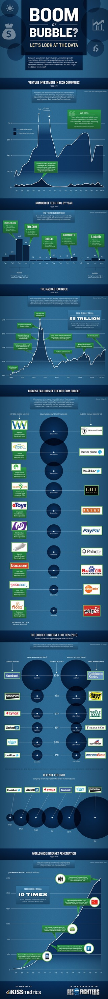
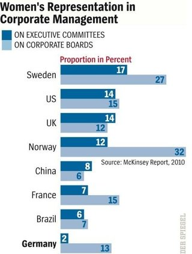
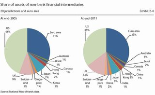
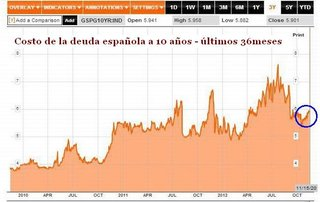
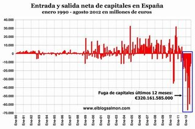
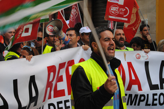
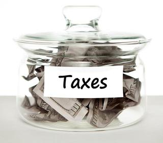
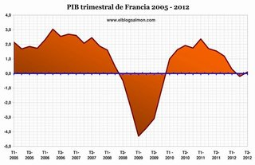
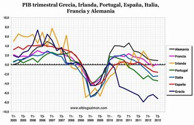

Mon, 19 Nov 2012 19:09:25 GMT
¿Qué harías para conseguir que las empresas pagaran impuestos en España?
¿Qué harías para conseguir que las empresas pagaran impuestos en España?
Hay empresas internacionales que se las ingenian para pagar, aprovechando resquicios legales o que al menos lo parecen, los menores impuestos posibles, cosa que es perfectamente entendible, pero desde el punto de vista del interés general, poco deseable, por todo aquello que se deja de recaudar, por eso esta semana preguntamos: ¿Qué harías para conseguir que las empresas pagaran impuestos en España? Respecto a la pregunta de la semana pasada sobre una solución alternativa a los desahucios, la respuesta más valorada ha sido la de marrullero, que dice así: Hace falta una ley contra el endeudamiento familiar y que contemple la quiebra familiar. La ley concursal, si bien se puede aplicar a las personas jurídicas, no esta pensada para este tipo de situaciones. Una ley de quiebra familiar debe incorporar la figura de un mediador que permita que una familia que se encuentra en una situación limite pueda establecer un plan de pagos en la medida de sus posibilidades sin que la carga de intereses desorbitados impidan que alguna vez salga del agujero. Las deudas hay que pagarlas pero sin llevar al deudor a la deseseperanza.
Os recordamos que las respuestas debéis darlas en la sección correspondiente, donde podéis además plantear cualquier pregunta que se os ocurra. Los comentarios a este post están deshabilitados para que respondáis a la pregunta aquí. En El Blog Salmón | ¿Qué harías para hacer que las empresas pagaran impuestos en España?,Muchas empresas multinacionales pagan pocos impuestos

Hay empresas internacionales que se las ingenian para pagar, aprovechando resquicios legales o que al menos lo parecen, los menores impuestos posibles, cosa que es perfectamente entendible, pero desde el punto de vista del interés general, poco deseable, por todo aquello que se deja de recaudar, por eso esta semana preguntamos:
¿Qué harías para conseguir que las empresas pagaran impuestos en España?
Respecto a la pregunta de la semana pasada sobre una solución alternativa a los desahucios, la respuesta más valorada ha sido la de marrullero, que dice así:
Hace falta una ley contra el endeudamiento familiar y que contemple la quiebra familiar. La ley concursal, si bien se puede aplicar a las personas jurídicas, no esta pensada para este tipo de situaciones. Una ley de quiebra familiar debe incorporar la figura de un mediador que permita que una familia que se encuentra en una situación limite pueda establecer un plan de pagos en la medida de sus posibilidades sin que la carga de intereses desorbitados impidan que alguna vez salga del agujero. Las deudas hay que pagarlas pero sin llevar al deudor a la deseseperanza.
Os recordamos que las respuestas debéis darlas en la sección correspondiente, donde podéis además plantear cualquier pregunta que se os ocurra. Los comentarios a este post están deshabilitados para que respondáis a la pregunta aquí.
En El Blog Salmón | ¿Qué harías para hacer que las empresas pagaran impuestos en España?,Muchas empresas multinacionales pagan pocos impuestos
Mon, 19 Nov 2012 16:34:29 GMT
Permiso de residencia para los compradores de viviendas, una buena medida mal criticada
Permiso de residencia para los compradores de viviendas, una buena medida mal criticada
Hoy, el Gobierno se ha destapado con una nueva medida que ha creado un buen revuelo en los medios de comunicación. La medida que ha planteado es otorgar el permiso de residencia a los extranjeros que compren una vivienda por valor de 160.000 euros en adelante. La medida ha levantado ampollas, en primer lugar por el malentendido entre nacionalidad y residencia, términos jurídicos que la mayoría de periodistas no tienen claros y que tienen una diferencia sustancial. De entrada, esta medida es una medida excelente y que no es ninguna novedad dentro de los ordenamientos jurídicos de bastantes países. Además, la mezcla de conceptos es espectacular y se están propagando varios bulos. Un residente en España no tiene derecho a la asistencia sanitaria por el hecho de residir. Recordemos que los cambios introducidos en la Ley General de la Seguridad Social dan cobertura sanitaria a los residentes que tengan un trabajo por cuenta propia o ajena. Primer tópico desmontado, dado que estos compradores, pueden usar estas viviendas como segundas residencias y trabajar en sus países de origen. Ahora bien, si encuentran trabajo en España, ¿qué problema hay para que tengan su cobertura sanitaria? El permiso de residencia sin permiso de trabajo siempre ha tenido precio económico. Lo digo porque hay titulares en medios que no se han molestado en leerse siquiera la ley que critican. Ahora mismo, cualquier extranjero que solicite la residencia en España la puede tener si acredita medios económicos suficientes para mantenerse él y su familia. Se ha establecido un binomio extranjero rico = extranjero mafioso que no tiene base alguna. Que hay mafias, sí cierto, tanto españolas como extranjeras pero el titular de “España se nos llenará de mafiosos” no tiene correlación alguna con las estadísticas reales. ¿Acaso no hay mafias extranjeras en España ya? ¿No es cierto que existen bastantes inmuebles adquiridos por sociedades en España que se usan y disfrutan por personas física? Por último, a nadie se le ha ocurrido evaluar la revitalización económica a efectos de consumo interno que puede suponer la entrada de ciudadanos con alto poder adquisitivo, su capacidad de gasto e inversión y las sinergias positivas que puede tener a todos los efectos. En este país lo mismo defendemos sanidad universal para todos que criticamos la llegada de extranjeros con los mismos argumentos. Curioso pulso sobre la actividad diaria. En El Blog Salmón | La enmienda Varsavsky y la crisis hipotecaria Imagen | El coleccionista de instantes
Hoy, el Gobierno se ha destapado con una nueva medida que ha creado un buen revuelo en los medios de comunicación. La medida que ha planteado es otorgar el permiso de residencia a los extranjeros que compren una vivienda por valor de 160.000 euros en adelante.
La medida ha levantado ampollas, en primer lugar por el malentendido entre nacionalidad y residencia, términos jurídicos que la mayoría de periodistas no tienen claros y que tienen una diferencia sustancial. De entrada, esta medida es una medida excelente y que no es ninguna novedad dentro de los ordenamientos jurídicos de bastantes países. Además, la mezcla de conceptos es espectacular y se están propagando varios bulos.
Un residente en España no tiene derecho a la asistencia sanitaria por el hecho de residir. Recordemos que los cambios introducidos en la Ley General de la Seguridad Social dan cobertura sanitaria a los residentes que tengan un trabajo por cuenta propia o ajena. Primer tópico desmontado, dado que estos compradores, pueden usar estas viviendas como segundas residencias y trabajar en sus países de origen. Ahora bien, si encuentran trabajo en España, ¿qué problema hay para que tengan su cobertura sanitaria?
El permiso de residencia sin permiso de trabajo siempre ha tenido precio económico. Lo digo porque hay titulares en medios que no se han molestado en leerse siquiera la ley que critican. Ahora mismo, cualquier extranjero que solicite la residencia en España la puede tener si acredita medios económicos suficientes para mantenerse él y su familia.
Se ha establecido un binomio extranjero rico = extranjero mafioso que no tiene base alguna. Que hay mafias, sí cierto, tanto españolas como extranjeras pero el titular de “España se nos llenará de mafiosos” no tiene correlación alguna con las estadísticas reales. ¿Acaso no hay mafias extranjeras en España ya? ¿No es cierto que existen bastantes inmuebles adquiridos por sociedades en España que se usan y disfrutan por personas física?
Por último, a nadie se le ha ocurrido evaluar la revitalización económica a efectos de consumo interno que puede suponer la entrada de ciudadanos con alto poder adquisitivo, su capacidad de gasto e inversión y las sinergias positivas que puede tener a todos los efectos. En este país lo mismo defendemos sanidad universal para todos que criticamos la llegada de extranjeros con los mismos argumentos. Curioso pulso sobre la actividad diaria.
En El Blog Salmón | La enmienda Varsavsky y la crisis hipotecaria
Imagen | El coleccionista de instantes
Mon, 19 Nov 2012 08:48:24 GMT
Los salarios siguen ajustándose… Ahora le toca el turno a los márgenes
Los salarios siguen ajustándose… Ahora le toca el turno a los márgenes
Hace un mes el Banco de España alertaba: el ahorro por los recortes laborales no debe servir sólo para mantener o incrementar los beneficios, sin ajustar los precios. Ahora, las estadísticas dejan claro que los ajustes no han sido del todo iguales. Mientras que los asalariados han perdido casi 26.000 millones de euros, las empresas recuperan unos 12.000, dejando la brecha en este ejercicio en casi 38.000 millones de euros, según publica hoy Cinco Días. ¿Cuándo llegarán los ajustes en los márgenes de beneficio? Diez trimestres de recorte en los costes salariales, colocándolos entre los más bajos de la UE. Ante este escenario, la mejora de la competitividad económica pasa también por una rebaja de los márgenes comerciales en las empresas. No lo decimos nosotros, lo dice el Banco de España que teme que el ahorro logrado a través de esos recortes sólo sirva para maximizar beneficios y no para ajustar los precios. Nuestro país ha encadenado más trimestres que ningún otro país de la Organización para la Cooperación y el Desarrollo Económicos (OCDE) de descensos en los costes laborales. Han sido una decena, con el fin de lograr una mayor competitividad de la economía en el escenario internacional. Se redujeron siete décimas en el primer trimestre de este año y repuntaron cuatro en los tres meses siguientes. Recortes generalizadosEn lo que va de año, la crisis ha seguido dejando bajo mínimos los salarios del grueso de los trabajadores. Así, el incremento salarial medio pactado en los convenios colectivos hasta septiembre por 4,4 millones de trabajadores, fue del 1,3 % lo que supone una tercera parte de lo que subieron los precios. Estos recortes generalizados se producen en una economía en la que los costes laborales son los más bajos de los principales países de la zona euro. En concreto, se concluyó el pasado año 2011 con una media de 20,6 euros por hora (incluidas las cotizaciones sociales), según revela el estudio comparativo elaborado por Eurostat. ¿Las consecuencias? Nos las señalaba el compañero Aurelio en un artículo la semana pasada sobre el informe ‘Adiós a las clases medias’ elaborado por el Sindicato de Técnicos del Ministerio de Hacienda (Gestha): el número de españoles que viven con mil euros al mes o menos asciende a 17.710.132, 1,3 millones más desde que comenzó la crisis en 2007. Se trata de una de las acciones incluidas en la necesaria devaluación interna con la que ganar competitividad en esta difícil situación. De eso no hay duda. Sin embargo, sí hay dudas sobre si el reparto entre los costes laborales y los márgenes comerciales de las empresas está siendo equilibrado. El Banco de España recuerda que las compañías deben recortar también en el beneficio. El ahorro… ¿A beneficios?Como decíamos al principio, el director del Servicio de Estudios del BdE, José Luis Malo de Molina, resaltó hace apenas un mes el temor del organismo regulador por que el ahorro de la reducción de los costes laborales sirva para ampliar o recomponer los beneficios empresariales y no tanto para ajustar los precios y ganar competitividad global de la economía. Pues parece que la realidad ha dado la razón a esos temores. Según publica hoy el diario Cinco Días, la crisis está literalmente transformando el reparto de la renta. En el cuarto trimestre los beneficios empresariales superarán por primera vez a los salarios, y lo harán de manera abultada durante todo el próximo año. En este 2012, el brutal recorte de empleo ha provocado que los asalariados pierdan casi 26.000 millones de euros de renta, mientras que los empresarios recuperan unos 12.000 millones. La brecha entre ambos durante el ejercicio asciende a cerca de 38.000 millones. Esa brutal pérdida de empleo en esta crisis, acentuada en los tres últimos trimestres, junto con la congelación salarial de la que hablábamos antes se une a la subida de impuestos como los factores de pérdida de renta para los asalariados de este país. ¿Son los ajustes proporcionados entre los dos agentes que se reparten la ‘riqueza’ del país? ¿La devaluación interna sólo pasa por los ajustes en empleo y no de los márgenes y beneficios de las empresas? Parece que ahora le toca el turno a estos últimos. En El Blog Salmón | España va camino del precipicio, BCE pide salarios más bajos pero ¿qué pasa con el consumo interno, el ahorro y la deuda privada? Imagen | Images_of_Money
Hace un mes el Banco de España alertaba: el ahorro por los recortes laborales no debe servir sólo para mantener o incrementar los beneficios, sin ajustar los precios. Ahora, las estadísticas dejan claro que los ajustes no han sido del todo iguales. Mientras que los asalariados han perdido casi 26.000 millones de euros, las empresas recuperan unos 12.000, dejando la brecha en este ejercicio en casi 38.000 millones de euros, según publica hoy Cinco Días. ¿Cuándo llegarán los ajustes en los márgenes de beneficio?
Diez trimestres de recorte en los costes salariales, colocándolos entre los más bajos de la UE. Ante este escenario, la mejora de la competitividad económica pasa también por una rebaja de los márgenes comerciales en las empresas. No lo decimos nosotros, lo dice el Banco de España que teme que el ahorro logrado a través de esos recortes sólo sirva para maximizar beneficios y no para ajustar los precios.
Nuestro país ha encadenado más trimestres que ningún otro país de la Organización para la Cooperación y el Desarrollo Económicos (OCDE) de descensos en los costes laborales. Han sido una decena, con el fin de lograr una mayor competitividad de la economía en el escenario internacional. Se redujeron siete décimas en el primer trimestre de este año y repuntaron cuatro en los tres meses siguientes.
Recortes generalizados
En lo que va de año, la crisis ha seguido dejando bajo mínimos los salarios del grueso de los trabajadores. Así, el incremento salarial medio pactado en los convenios colectivos hasta septiembre por 4,4 millones de trabajadores, fue del 1,3 % lo que supone una tercera parte de lo que subieron los precios.
Estos recortes generalizados se producen en una economía en la que los costes laborales son los más bajos de los principales países de la zona euro. En concreto, se concluyó el pasado año 2011 con una media de 20,6 euros por hora (incluidas las cotizaciones sociales), según revela el estudio comparativo elaborado por Eurostat.
¿Las consecuencias? Nos las señalaba el compañero Aurelio en un artículo la semana pasada sobre el informe ‘Adiós a las clases medias’ elaborado por el Sindicato de Técnicos del Ministerio de Hacienda (Gestha): el número de españoles que viven con mil euros al mes o menos asciende a 17.710.132, 1,3 millones más desde que comenzó la crisis en 2007.
Se trata de una de las acciones incluidas en la necesaria devaluación interna con la que ganar competitividad en esta difícil situación. De eso no hay duda. Sin embargo, sí hay dudas sobre si el reparto entre los costes laborales y los márgenes comerciales de las empresas está siendo equilibrado. El Banco de España recuerda que las compañías deben recortar también en el beneficio.
El ahorro… ¿A beneficios?
Como decíamos al principio, el director del Servicio de Estudios del BdE, José Luis Malo de Molina, resaltó hace apenas un mes el temor del organismo regulador por que el ahorro de la reducción de los costes laborales sirva para ampliar o recomponer los beneficios empresariales y no tanto para ajustar los precios y ganar competitividad global de la economía.
Pues parece que la realidad ha dado la razón a esos temores. Según publica hoy el diario Cinco Días, la crisis está literalmente transformando el reparto de la renta. En el cuarto trimestre los beneficios empresariales superarán por primera vez a los salarios, y lo harán de manera abultada durante todo el próximo año. En este 2012, el brutal recorte de empleo ha provocado que los asalariados pierdan casi 26.000 millones de euros de renta, mientras que los empresarios recuperan unos 12.000 millones. La brecha entre ambos durante el ejercicio asciende a cerca de 38.000 millones.
Esa brutal pérdida de empleo en esta crisis, acentuada en los tres últimos trimestres, junto con la congelación salarial de la que hablábamos antes se une a la subida de impuestos como los factores de pérdida de renta para los asalariados de este país.
¿Son los ajustes proporcionados entre los dos agentes que se reparten la ‘riqueza’ del país? ¿La devaluación interna sólo pasa por los ajustes en empleo y no de los márgenes y beneficios de las empresas? Parece que ahora le toca el turno a estos últimos.
En El Blog Salmón | España va camino del precipicio, BCE pide salarios más bajos pero ¿qué pasa con el consumo interno, el ahorro y la deuda privada?
Imagen | Images_of_Money
Sun, 18 Nov 2012 11:08:27 GMT
Herencias sin herederos y la tarjeta de crédito del futuro, lo mejor de Entorno El Blog Salmón
Herencias sin herederos y la tarjeta de crédito del futuro, lo mejor de Entorno El Blog Salmón
Continuando con nuestros resúmenes de entradas interesantes en nuestros blogs habituales, vamos a darle paso a la selección de la semana:
¿Te has preguntado alguna vez adónde van las herencias que no tienen herederos? Nuestros compañeros de Actibva nos cuentan los pormenores de la sucesión legítima en estos casos.
En un momento en que la liquidez de particulares y empresas brilla por su ausencia, ¿qué mejor que repasar cómo los agregados monetarios son el termómetro de liquidez de un país?
Es incuestionable que la crisis esté haciendo estragos en la sociedad española. ¿Qué colectivo crees que está siendo el más perjudicado por sus efectos, los mayores o los jóvenes?
¿Una tarjeta de crédito con teclado y pantalla integrados sobre el plástico? Nos referimos a la tarjeta Display Card de MasterCard y podría convertirse en la tarjeta de crédito del futuro.
Supongo que estaremos de acuerdo si señalo que el paro se ha convertido en la raíz de los principales problemas de España. Echémosle un vistazo a los datos de la inactividad laboral para comprenderlo mejor.
¿Eres empresario y te estás planteando hacer modificaciones sustanciales de las condiciones de trabajo en tu empresa? Este es un asunto delicado y desde Sage nos enseñan cuatro formas de rebajar las condiciones salariales de la plantilla.
¿Quién no conoce la compañía juguetera Famosa? En Pymes y Autónomos le han hecho una esclarecedora entrevista a sus responsables a la que te recomendamos que le eches un vistazo.
Si eres empresario deberías saber que la web de tu empresa es la imagen de la misma en internet. ¿Estás seguro de que le destinas los recursos que se merece? En El Blog Salmón | Entorno El Blog Salmón
Continuando con nuestros resúmenes de entradas interesantes en nuestros blogs habituales, vamos a darle paso a la selección de la semana:
- ¿Te has preguntado alguna vez adónde van las herencias que no tienen herederos? Nuestros compañeros de Actibva nos cuentan los pormenores de la sucesión legítima en estos casos.
- En un momento en que la liquidez de particulares y empresas brilla por su ausencia, ¿qué mejor que repasar cómo los agregados monetarios son el termómetro de liquidez de un país?
- Es incuestionable que la crisis esté haciendo estragos en la sociedad española. ¿Qué colectivo crees que está siendo el más perjudicado por sus efectos, los mayores o los jóvenes?
- ¿Una tarjeta de crédito con teclado y pantalla integrados sobre el plástico? Nos referimos a la tarjeta Display Card de MasterCard y podría convertirse en la tarjeta de crédito del futuro.
- Supongo que estaremos de acuerdo si señalo que el paro se ha convertido en la raíz de los principales problemas de España. Echémosle un vistazo a los datos de la inactividad laboral para comprenderlo mejor.
- ¿Eres empresario y te estás planteando hacer modificaciones sustanciales de las condiciones de trabajo en tu empresa? Este es un asunto delicado y desde Sage nos enseñan cuatro formas de rebajar las condiciones salariales de la plantilla.
- ¿Quién no conoce la compañía juguetera Famosa? En Pymes y Autónomos le han hecho una esclarecedora entrevista a sus responsables a la que te recomendamos que le eches un vistazo.
- Si eres empresario deberías saber que la web de tu empresa es la imagen de la misma en internet. ¿Estás seguro de que le destinas los recursos que se merece?
En El Blog Salmón | Entorno El Blog Salmón
Sat, 17 Nov 2012 06:00:21 GMT
Te va a salir caro haber acertado
Te va a salir caro haber acertado
Decía en mi último post que en el siguiente, en éste, pensaba comentar mi impresión acerca de la evidente discriminación social, mediática y política entre los desahucios de hipotecados y los de inquilinos. Y para ello voy a partir de la cita de un conocido economista, al que poco o nada me une, John Kenneth Galbraith, el discipulo de Keynes (y es que los expertos en manipulación de masas son los expertos). En cualquier gran organización es mucho, mucho más seguro equivocarse con la mayoría que acertar solo.
Resumiendo, esto no va de acertar o no acertar. Esto consiste en estar con la mayoría o no, y si me apuran de estar con la minoría organizada, leninista (en el sentido organizativo) que controla el cotarro. Así de sencillo, y al clavo que sobresale se le remacha, por discrepante, libertario o anarquista. ¿Queréis ejemplos? Pensaste en un momento que los precios inmobiliarios eran excesivos. Y, contra la corriente mayoritaria, alquilaste, por motivos de seguridad, financieros, de movilidad geográfica, etc. ¿Acertaste con tu predicción? Puede, pero ahora te encuentras con que la ley protege al hipotecado desahuciado y no al inquilino desahuciado, que tu empresa, por mor de la crisis ha petado, y que eres tan o más vulnerable que el que apostó con la banca (nunca mejor dicho). Si has ahorrado, encima te encontraras con que deberás pagar más impuestos para sostener todo este tinglado social, que las pocas ayudas que tenías te serán recortadas pues otros las necesitan más que tu. Y por supuesto, si dudas, te chantajearan psicológicamente al grito de insolidario. Es posible que hayas estudiado, que durante muchos años, mientras tus amigos se ganaban un dinero en la construcción, tu apenas podías sacarte unos euros. Y ahora te encuentras con que debes contribuir con tus recursos vía impuestos (y recorte de sueldo si eres empleado público) a que se vuelvan a animar a estudiar. Recuerda, hoy por ellos, y mañana también. Optaste por dejar tu dinero en un banco conservador, en un simple plazo fijo, desconfiando de ofertas como las de Bankia, pero ahora te encuentras que los que no fueron tan precavidos como tu tienen su dinero y encima le sacaron mucha más rentabilidad. Tenías razón, pero de que te ha valido más allá de tener que financiar el rescate de los imprudentes. Ahora piensas que el sistema de pensiones publicas está quebrado, que es insostenible, y ahorras por tu cuenta. Da igual que lo hagas en un plan de pensiones, en un inmueble o en otros activos financieros. Si acabas acertando, el Estado, invocando lo que tú ya sabes (si, la solidaridad) te lo acabará guindando de un modo u otro. Así que si fuiste prudente, si te formaste, si ahorraste, enhorabuena. Has acertado. Tenías razón. Y ahora vas a pagar por ello, vas a pagar a los que no la tenían. Es la democracia, o lo que la mayoría entiende por democracia ,y a estas alturas debes tener claro que tener la razón o no es irrelevante. Súmate a la mayoría. Sé demócrata. En El Blog Salmón | BBVA obligado a acudir como accionista al Sareb si no quiere ser el malo de la clase
Decía en mi último post que en el siguiente, en éste, pensaba comentar mi impresión acerca de la evidente discriminación social, mediática y política entre los desahucios de hipotecados y los de inquilinos. Y para ello voy a partir de la cita de un conocido economista, al que poco o nada me une, John Kenneth Galbraith, el discipulo de Keynes (y es que los expertos en manipulación de masas son los expertos).
En cualquier gran organización es mucho, mucho más seguro equivocarse con la mayoría que acertar solo.
Resumiendo, esto no va de acertar o no acertar. Esto consiste en estar con la mayoría o no, y si me apuran de estar con la minoría organizada, leninista (en el sentido organizativo) que controla el cotarro. Así de sencillo, y al clavo que sobresale se le remacha, por discrepante, libertario o anarquista. ¿Queréis ejemplos?
Pensaste en un momento que los precios inmobiliarios eran excesivos. Y, contra la corriente mayoritaria, alquilaste, por motivos de seguridad, financieros, de movilidad geográfica, etc. ¿Acertaste con tu predicción? Puede, pero ahora te encuentras con que la ley protege al hipotecado desahuciado y no al inquilino desahuciado, que tu empresa, por mor de la crisis ha petado, y que eres tan o más vulnerable que el que apostó con la banca (nunca mejor dicho).
Si has ahorrado, encima te encontraras con que deberás pagar más impuestos para sostener todo este tinglado social, que las pocas ayudas que tenías te serán recortadas pues otros las necesitan más que tu. Y por supuesto, si dudas, te chantajearan psicológicamente al grito de insolidario.
Es posible que hayas estudiado, que durante muchos años, mientras tus amigos se ganaban un dinero en la construcción, tu apenas podías sacarte unos euros. Y ahora te encuentras con que debes contribuir con tus recursos vía impuestos (y recorte de sueldo si eres empleado público) a que se vuelvan a animar a estudiar. Recuerda, hoy por ellos, y mañana también.
Optaste por dejar tu dinero en un banco conservador, en un simple plazo fijo, desconfiando de ofertas como las de Bankia, pero ahora te encuentras que los que no fueron tan precavidos como tu tienen su dinero y encima le sacaron mucha más rentabilidad. Tenías razón, pero de que te ha valido más allá de tener que financiar el rescate de los imprudentes.
Ahora piensas que el sistema de pensiones publicas está quebrado, que es insostenible, y ahorras por tu cuenta. Da igual que lo hagas en un plan de pensiones, en un inmueble o en otros activos financieros. Si acabas acertando, el Estado, invocando lo que tú ya sabes (si, la solidaridad) te lo acabará guindando de un modo u otro.
Así que si fuiste prudente, si te formaste, si ahorraste, enhorabuena. Has acertado. Tenías razón. Y ahora vas a pagar por ello, vas a pagar a los que no la tenían.
Es la democracia, o lo que la mayoría entiende por democracia ,y a estas alturas debes tener claro que tener la razón o no es irrelevante.
Súmate a la mayoría. Sé demócrata.
En El Blog Salmón | BBVA obligado a acudir como accionista al Sareb si no quiere ser el malo de la clase
Fri, 16 Nov 2012 20:11:39 GMT
El son del desahucio
El son del desahucio
A mi la canción protesta me aburre soberanamente, o como diría un british, it´s not my cup of tea. Mira que tenia esperanzas de que tuviese algo de gracia El son del desahucio, de Hilario Camacho, basado en el poema de Nicolas Guillén, pero se ve ni el roce cubano es capaz de mejorarla. Pero sin duda la música y la letra tendrá su público entre muchos de los lectores del blog. Me gustaría señalar que la letra hace referencia al desahucio de un inquilino, no precisamente de un hipotecado. Y pienso que más de uno, y de dos, de los que viven en pisos de alquiler se preguntan porque el Gobierno y buena parte de los movimientos sociales protegen a los hipotecados, mientras que a los arrendatarios que optaron por no arriesgarse con una hipoteca, o simplemente no pudieron, deben correr peor suerte. Ya digo que eso es tema para otro post, pero sólo tienen que tener un poco de paciencia. Después de montarla parda con los hipotecados, lucharan también por evitar los deshucios de los inquilinos, ya que muchos de ellas serán exhipotecados (si no pagaron la hipoteca, a ver porque van a pagar la renta). Recordemos que los hipotecados, los inquilinos, como antes los inmigrantes, o cualquier otro colectivo relevante, no son más que piezas, escudos humanos de una lucha por el poder, por el control social. Y el día de mañana, cautivo y desarmado el sentido común, el principio de legalidad, y el bolsillo del contribuyente, habrán alcanzado las tropas sociales sus últimos objetivos políticos. La guerra habrá terminado. Y tendremos más de 40 años de paz social. O 1.000 que diría otro defensor de las causas sociales. Perdón, que me dejo llevar. Os dejo la letra para el rollo fuego de campamento y guitarra de iglesia de II Concilio Vaticano (alabaré, alabaré,...). Son del desahucio
El alquiler se cumplió: te tienes que mudar; ay, pero el problema es serio, muy serio, pero el problema es muy serio, porque no hay con qué pagar. Si encuentras cuarto vacío, te tienes que mudar, y si acaso no lo encuentras, te tienes que mudar. Si el dueño dice: «Lo siento», te tienes que mudar; pero si no dice nada, te tienes que mudar. Como quiera, como quiera, te tienes que mudar; con dinero, sin dinero, te tienes que mudar; donde sea, como sea, te tienes que mudar, te tienes que mudar, ¡te tienes que mudar! Calma, mi compadre, calma, vamos los dos a cantar, que llegue el casero ahora, él nos podrá acompañar. —Escuche, amigo casero, ayer me citó el Juzgado, y dije que no he pagado porque no tengo dinero, y estoy parado. Yo no me voy a la calle, porque la lluvia me moja; venga usted, casero, y diga, diga, venga usted, casero, y diga, diga, si va a curarme el catarro, si va a curarme el catarro, después que el agua me coja. Conozco hoteles vacíos y casas sin habitantes: ¿cómo voy a estar de pie, con tantos puestos vacantes? Calma, mi compadre, calma, vamos los dos a cantar; que llegue el casero ahora, él nos podrá acompañar. ¿Es que a usted lo achica el miedo? No, señor; a mí no me achica el miedo, y aquí me quedo, sí, señor, y aquí me quedo, sí, señor, y aquí me quedo…
Vía | El blues de la inflación En El Blog Salmón | El blues de la inflación Más información | Pymes y Autónomos
A mi la canción protesta me aburre soberanamente, o como diría un british, it´s not my cup of tea. Mira que tenia esperanzas de que tuviese algo de gracia El son del desahucio, de Hilario Camacho, basado en el poema de Nicolas Guillén, pero se ve ni el roce cubano es capaz de mejorarla. Pero sin duda la música y la letra tendrá su público entre muchos de los lectores del blog.
Me gustaría señalar que la letra hace referencia al desahucio de un inquilino, no precisamente de un hipotecado. Y pienso que más de uno, y de dos, de los que viven en pisos de alquiler se preguntan porque el Gobierno y buena parte de los movimientos sociales protegen a los hipotecados, mientras que a los arrendatarios que optaron por no arriesgarse con una hipoteca, o simplemente no pudieron, deben correr peor suerte.
Ya digo que eso es tema para otro post, pero sólo tienen que tener un poco de paciencia. Después de montarla parda con los hipotecados, lucharan también por evitar los deshucios de los inquilinos, ya que muchos de ellas serán exhipotecados (si no pagaron la hipoteca, a ver porque van a pagar la renta). Recordemos que los hipotecados, los inquilinos, como antes los inmigrantes, o cualquier otro colectivo relevante, no son más que piezas, escudos humanos de una lucha por el poder, por el control social.
Y el día de mañana, cautivo y desarmado el sentido común, el principio de legalidad, y el bolsillo del contribuyente, habrán alcanzado las tropas sociales sus últimos objetivos políticos. La guerra habrá terminado. Y tendremos más de 40 años de paz social. O 1.000 que diría otro defensor de las causas sociales.
Perdón, que me dejo llevar. Os dejo la letra para el rollo fuego de campamento y guitarra de iglesia de II Concilio Vaticano (alabaré, alabaré,...).
Son del desahucio
El alquiler se cumplió:
te tienes que mudar;
ay, pero el problema es serio,
muy serio,
pero el problema es muy serio,
porque no hay con qué pagar. Si encuentras cuarto vacío,
te tienes que mudar,
y si acaso no lo encuentras,
te tienes que mudar.
Si el dueño dice: «Lo siento»,
te tienes que mudar;
pero si no dice nada,
te tienes que mudar.
Como quiera, como quiera,
te tienes que mudar;
con dinero, sin dinero,
te tienes que mudar;
donde sea, como sea,
te tienes que mudar,
te tienes que mudar,
¡te tienes que mudar!
Calma, mi compadre, calma,
vamos los dos a cantar,
que llegue el casero ahora,
él nos podrá acompañar.
—Escuche, amigo casero,
ayer me citó el Juzgado,
y dije que no he pagado
porque no tengo dinero,
y estoy parado.
Yo no me voy a la calle,
porque la lluvia me moja;
venga usted, casero, y diga,
diga,
venga usted, casero, y diga,
diga,
si va a curarme el catarro,
si va a curarme el catarro,
después que el agua me coja.
Conozco hoteles vacíos
y casas sin habitantes:
¿cómo voy a estar de pie,
con tantos puestos vacantes?
Calma, mi compadre, calma,
vamos los dos a cantar;
que llegue el casero ahora,
él nos podrá acompañar.
¿Es que a usted lo achica el miedo?
No, señor;
a mí no me achica el miedo,
y aquí me quedo,
sí, señor,
y aquí me quedo,
sí, señor,
y aquí me quedo…
Vía | El blues de la inflación
En El Blog Salmón | El blues de la inflación
Más información | Pymes y Autónomos
Fri, 16 Nov 2012 18:50:19 GMT
Puntocom: boom o burbuja (infografía)
Puntocom: boom o burbuja (infografía)
KISSmetrics Web Analytics La presente infografía, elaborada por Kissmetrics, pretende mostrar gráficamente un dilema del que ya hemos hablado más de una vez en EBS respecto a las puntocom: ¿nos encontramos ante un boom o ante una burbuja 2.0? Para ello, establece comparaciones entre la histórica burbuja de internet en una primera etapa y la situación actual, así como entre las empresas surgidas de la Red y algunos de los grandes ajenos a la misma. ¿Conclusiones? Pues como los finales de la espalda, cada uno tendremos la nuestra. Respecto a aquel pasado yo encuentro alguna diferencia, sin ánimo exhaustivo:
Creo que las empresas hoy por hoy tienen mucho más claro que las visitas, el tráfico, etc, no son suficientes, que hay que facturar y que encontrar un modelo recurrente de ingresos es básico. Hay un mayor desarrollo del mercado de los micropagos. Hay menos facilidades financieras que antaño, lo que sin duda no ayuda a elevar el valor de los activos. Existe una crisis global que lastra el consumo y frena, para muchos negocios, un crecimiento que es fundamental en sus primeros años. Pero, dichas diferencias no me impiden ver alguna que otra semejanza, o esas es mi sensación:
La innata tendencia humana a pensar que esta vez será diferente, al adanismo, a olvidar el pasado o a encontrar nuevo lo viejo. Sigo viendo prácticas financieras más que dudosas, empresas orientadas pura y duramente a ser colocadas a los inversores y a otra cosa, mariposa, etc…
Se sigue confiando excesivamente en los ingresos publicitarios y en el ya-se-nos-ocurrirá algo. El público objetivo de las empresas ha crecido, y por tanto también sus volúmenes, lo que de algún modo compensa el freno financiero. El pago por contenido sigue costando. Y mucho. No sé, tengo la sensación de que en esta ocasión va a haber más supervivientes que en el caso anterior, pero que no vamos a poder evitar unos cuantos muertos ilustres y algún que otro dolor de cabeza. Vía | kissmetrics En El Blog Salmón | ¿Estamos ante otra burbuja punto com?, Facebook, ¿por qué la valoración de salida no era buena?
KISSmetrics Web Analytics
La presente infografía, elaborada por Kissmetrics, pretende mostrar gráficamente un dilema del que ya hemos hablado más de una vez en EBS respecto a las puntocom: ¿nos encontramos ante un boom o ante una burbuja 2.0? Para ello, establece comparaciones entre la histórica burbuja de internet en una primera etapa y la situación actual, así como entre las empresas surgidas de la Red y algunos de los grandes ajenos a la misma.
¿Conclusiones? Pues como los finales de la espalda, cada uno tendremos la nuestra. Respecto a aquel pasado yo encuentro alguna diferencia, sin ánimo exhaustivo:
- Creo que las empresas hoy por hoy tienen mucho más claro que las visitas, el tráfico, etc, no son suficientes, que hay que facturar y que encontrar un modelo recurrente de ingresos es básico.
- Hay un mayor desarrollo del mercado de los micropagos.
- Hay menos facilidades financieras que antaño, lo que sin duda no ayuda a elevar el valor de los activos.
- Existe una crisis global que lastra el consumo y frena, para muchos negocios, un crecimiento que es fundamental en sus primeros años.
Pero, dichas diferencias no me impiden ver alguna que otra semejanza, o esas es mi sensación:
- La innata tendencia humana a pensar que esta vez será diferente, al adanismo, a olvidar el pasado o a encontrar nuevo lo viejo. Sigo viendo prácticas financieras más que dudosas, empresas orientadas pura y duramente a ser colocadas a los inversores y a otra cosa, mariposa, etc…
-
Se sigue confiando excesivamente en los ingresos publicitarios y en el ya-se-nos-ocurrirá algo.
- El público objetivo de las empresas ha crecido, y por tanto también sus volúmenes, lo que de algún modo compensa el freno financiero.
- El pago por contenido sigue costando. Y mucho.
No sé, tengo la sensación de que en esta ocasión va a haber más supervivientes que en el caso anterior, pero que no vamos a poder evitar unos cuantos muertos ilustres y algún que otro dolor de cabeza.
Vía | kissmetrics
En El Blog Salmón | ¿Estamos ante otra burbuja punto com?, Facebook, ¿por qué la valoración de salida no era buena?
Fri, 16 Nov 2012 16:00:26 GMT
Europa dice que sigue la discriminación contra las mujeres
Europa dice que sigue la discriminación contra las mujeres
Hace unos días, vicepresidenta de la Comisión Europea (CE) y comisionada de Justicia, Derechos Fundamentales y Ciudadanía anunció una iniciativa que busca aumentar el porcentaje de presencia de las mujeres en los puestos de consejo no directivo en las empresas europeas a un mínimo del 40%. Como vemos en la tabla, los países europeos son muy modernos pero sólo los escandinavos están demostrando avances reales en eso de igualdad entre mujeres y hombres en los consejos de administración de las empresas, los únicos que acompañan los objetivos con penas reales. El problema es que, tres semanas después de que lanzó sus ideas que prometían, ya que seguían el modelo noruego, llegaron las críticas. Políticos siendo políticos, no necesitan recibir muchas críticas para cambiar de rumbo y, aunque el objetivo sigue siendo el mismo, el grueso de sus nuevas propuestas son más recomendaciones que exigencias y las multas serán casi imposibles de aplicar. Los principales elementos de su propuesta son los siguientes:
En los consejos de administración de las empresas cotizadas en las bolsas europeas, la Directiva establecerá un objetivo mínimo del 40% en 2020 para los miembros del género menos representado en los Consejos para los puestos de consejero no ejecutivos, o 2018 para las empresas cotizadas con representación pública.
La propuesta también incluye, como medida complementaria, una “cuota flexible”: la obligación de que las empresas cotizadas establezcan objetivos con respecto a la representación de ambos géneros en los consejos de dirección que deben cumplirse en 2020 (o 2018 en el caso de las empresas públicas). Las empresas tendrán que informar anualmente sobre los progresos alcanzados.
Las características de selección de los consejeros seguirán siendo las cualificaciones y los méritos como los criterios objetivos. Se establecerán medidas de protección para asegurar que los procesos de selección siguen los criterios independientes y no priman al género con menos representación, como exigen las decisiones del Tribunal Europeo de Justicia. Los Estados miembros son libres de adoptar medidas que van más allá del sistema propuesto.
Los Estados miembros deberán establecer sanciones adecuadas y disuasorias a las empresas que incumplen la Directiva.
La subsidiariedad y la proporcionalidad de la propuesta está desmostrada con varias condiciones de flexibilidad:
El objetivo del 40% se aplicará a las empresas que cotizan en bolsa, debido a su importancia económica y de alta visibilidad.
La propuesta no se aplicará a las pequeñas y medianas empresas.
El objetivo del 40% se concentra en puestos de directores no ejecutivos.
En consonancia con los principios de mejora de la legislación, la Directiva es una medida temporal y está previsto que expire en 2028.
Las empresas, como muchos de los comentaristas cuando escribo sobre estos temas, piden más tiempo y más libertad para cumplir. Como las mujeres están en el mercado de trabajo durante décadas, las empresas han tenido décadas para demostrar que quieren dejar de discriminar contra las mujeres. Además, hablando de los consejos de administración, no vale el argumento que recibo de algunos comentaristas de que las mujeres son distintas y no pueden cargar con tanto peso como los hombres, haciéndoles incapaces de hacer el mismo trabajo . Ahora los informes no se tienen que cargar, que se pueden transportar de forma digital, y supongo que esto será suficiente para los que piensan que cargar peso es motivo aceptable para discriminar. Aunque esta nueva Directiva suaviza, por lo menos continúa el intento de ir en la dirección de la no discriminación. A ver si ayuda a que se enteren los que niegan que esta discriminación existe. ¡No hay que ver la discriminación en cada acto, se ve claramente en los resultados! Vía | EuroActive, BBC News & Spiegel (en inglés) En El Blog Salmón | La igualdad en el trabajo es justo, necesario y potencialmente rentable y Seguimos esperando la igualdad en los más altos niveles de la dirección

Hace unos días, vicepresidenta de la Comisión Europea (CE) y comisionada de Justicia, Derechos Fundamentales y Ciudadanía anunció una iniciativa que busca aumentar el porcentaje de presencia de las mujeres en los puestos de consejo no directivo en las empresas europeas a un mínimo del 40%. Como vemos en la tabla, los países europeos son muy modernos pero sólo los escandinavos están demostrando avances reales en eso de igualdad entre mujeres y hombres en los consejos de administración de las empresas, los únicos que acompañan los objetivos con penas reales.
El problema es que, tres semanas después de que lanzó sus ideas que prometían, ya que seguían el modelo noruego, llegaron las críticas. Políticos siendo políticos, no necesitan recibir muchas críticas para cambiar de rumbo y, aunque el objetivo sigue siendo el mismo, el grueso de sus nuevas propuestas son más recomendaciones que exigencias y las multas serán casi imposibles de aplicar.
Los principales elementos de su propuesta son los siguientes:
- En los consejos de administración de las empresas cotizadas en las bolsas europeas, la Directiva establecerá un objetivo mínimo del 40% en 2020 para los miembros del género menos representado en los Consejos para los puestos de consejero no ejecutivos, o 2018 para las empresas cotizadas con representación pública.
- La propuesta también incluye, como medida complementaria, una “cuota flexible”: la obligación de que las empresas cotizadas establezcan objetivos con respecto a la representación de ambos géneros en los consejos de dirección que deben cumplirse en 2020 (o 2018 en el caso de las empresas públicas). Las empresas tendrán que informar anualmente sobre los progresos alcanzados.
- Las características de selección de los consejeros seguirán siendo las cualificaciones y los méritos como los criterios objetivos. Se establecerán medidas de protección para asegurar que los procesos de selección siguen los criterios independientes y no priman al género con menos representación, como exigen las decisiones del Tribunal Europeo de Justicia. Los Estados miembros son libres de adoptar medidas que van más allá del sistema propuesto.
- Los Estados miembros deberán establecer sanciones adecuadas y disuasorias a las empresas que incumplen la Directiva.
- La subsidiariedad y la proporcionalidad de la propuesta está desmostrada con varias condiciones de flexibilidad:
- El objetivo del 40% se aplicará a las empresas que cotizan en bolsa, debido a su importancia económica y de alta visibilidad.
- La propuesta no se aplicará a las pequeñas y medianas empresas.
- El objetivo del 40% se concentra en puestos de directores no ejecutivos.
- En consonancia con los principios de mejora de la legislación, la Directiva es una medida temporal y está previsto que expire en 2028.
Las empresas, como muchos de los comentaristas cuando escribo sobre estos temas, piden más tiempo y más libertad para cumplir. Como las mujeres están en el mercado de trabajo durante décadas, las empresas han tenido décadas para demostrar que quieren dejar de discriminar contra las mujeres.
Además, hablando de los consejos de administración, no vale el argumento que recibo de algunos comentaristas de que las mujeres son distintas y no pueden cargar con tanto peso como los hombres, haciéndoles incapaces de hacer el mismo trabajo . Ahora los informes no se tienen que cargar, que se pueden transportar de forma digital, y supongo que esto será suficiente para los que piensan que cargar peso es motivo aceptable para discriminar.
Aunque esta nueva Directiva suaviza, por lo menos continúa el intento de ir en la dirección de la no discriminación. A ver si ayuda a que se enteren los que niegan que esta discriminación existe. ¡No hay que ver la discriminación en cada acto, se ve claramente en los resultados!
Vía | EuroActive, BBC News & Spiegel (en inglés)
En El Blog Salmón | La igualdad en el trabajo es justo, necesario y potencialmente rentable y Seguimos esperando la igualdad en los más altos niveles de la dirección
Fri, 16 Nov 2012 14:02:15 GMT
Ver para creer: la banca se deja entrever como víctima de los desahucios
Ver para creer: la banca se deja entrever como víctima de los desahucios
Como saben, el Consejo de Ministros de ayer aprobó un Decreto que ponía en marcha la paralización de los desahucios durante un período de dos años a las familias con unos ingresos máximos de 19.164 euros anuales y en situaciones de extrema necesidad, como estar en paro, tener hijos pequeños, dependientes o minusválidos. Tal y como nos comentó Remo, esta legislación “en caliente” ha nacido con polémica por considerarse insuficiente: si bien solucionará los problemas de un colectivo de personas, otros tantos se quedarán fuera de su amparo. Por no gustar, el Decreto no ha gustado ni a la propia banca, que a través de la Asociación Española de Banca (AEB) ha manifestado su disconformidad con lo que ellos consideran una injusticia, ya que creen que el coste recaerá exclusivamente en el sector financiero. Por más vueltas que le doy no consigo entender qué pretendían estos señores que pasara. Sus ambiciones económicas y su nefasta gestión de los créditos concedidos han dejado al sector financiero quebrado y han contribuido de una forma considerable a que el país esté al borde de la bancarrota. En lugar de dejarlos quebrar, que es lo que se debería haber hecho, nuestro Gobierno ha decidido nacionalizar sus pérdidas para que las paguemos entre todos y encima ahora tienen la desvergüenza de protestar por lo que consideran un atropello a sus intereses. El ansia de dinero de los directivos de estas entidades les llevó a conceder préstamos de alto riesgo a sabiendas de que probablemente el que lo recibía no iba a poder pagarlo. No pasa nada, pensaban, los desahuciamos, revendemos sus casas y seguimos llenándonos los bolsillos de dinero. Pues no, ni el precio de los inmuebles crece exponencialmente ni son libres de especular con el futuro de las personas. Lo que verdaderamente necesitamos en este país es una mano de hierro frente a la banca. Sólo ellos son responsables de su pésima gestión y la sociedad en su conjunto no tiene por qué ser víctima de sus ambiciones. Habría que reformar la ley hipotecaria de pies a cabeza, aprobar la dación en pago y convertir en obligatorio el Código de Buenas Prácticas, y no dejarlo en papel mojado como han hecho. Tolerancia cero con los grandes responsables de esta crisis. Ya está bien de que nos tomen por idiotas. Vía | El Mundo En El Blog Salmón | Detalle de las primeras medidas para parar los desahucios que nacen con polémica, Stop a los desahucios cruza fronteras y fuerza la legislación de reforma de la ejecución hipotecaria en caliente y Algunas ideas para parar los desahucios y las ejecuciones hipotecarias Imagen | Daquella manera
Como saben, el Consejo de Ministros de ayer aprobó un Decreto que ponía en marcha la paralización de los desahucios durante un período de dos años a las familias con unos ingresos máximos de 19.164 euros anuales y en situaciones de extrema necesidad, como estar en paro, tener hijos pequeños, dependientes o minusválidos.
Tal y como nos comentó Remo, esta legislación “en caliente” ha nacido con polémica por considerarse insuficiente: si bien solucionará los problemas de un colectivo de personas, otros tantos se quedarán fuera de su amparo. Por no gustar, el Decreto no ha gustado ni a la propia banca, que a través de la Asociación Española de Banca (AEB) ha manifestado su disconformidad con lo que ellos consideran una injusticia, ya que creen que el coste recaerá exclusivamente en el sector financiero.
Por más vueltas que le doy no consigo entender qué pretendían estos señores que pasara. Sus ambiciones económicas y su nefasta gestión de los créditos concedidos han dejado al sector financiero quebrado y han contribuido de una forma considerable a que el país esté al borde de la bancarrota. En lugar de dejarlos quebrar, que es lo que se debería haber hecho, nuestro Gobierno ha decidido nacionalizar sus pérdidas para que las paguemos entre todos y encima ahora tienen la desvergüenza de protestar por lo que consideran un atropello a sus intereses.
El ansia de dinero de los directivos de estas entidades les llevó a conceder préstamos de alto riesgo a sabiendas de que probablemente el que lo recibía no iba a poder pagarlo. No pasa nada, pensaban, los desahuciamos, revendemos sus casas y seguimos llenándonos los bolsillos de dinero. Pues no, ni el precio de los inmuebles crece exponencialmente ni son libres de especular con el futuro de las personas.
Lo que verdaderamente necesitamos en este país es una mano de hierro frente a la banca. Sólo ellos son responsables de su pésima gestión y la sociedad en su conjunto no tiene por qué ser víctima de sus ambiciones. Habría que reformar la ley hipotecaria de pies a cabeza, aprobar la dación en pago y convertir en obligatorio el Código de Buenas Prácticas, y no dejarlo en papel mojado como han hecho. Tolerancia cero con los grandes responsables de esta crisis. Ya está bien de que nos tomen por idiotas.
Vía | El Mundo
En El Blog Salmón | Detalle de las primeras medidas para parar los desahucios que nacen con polémica, Stop a los desahucios cruza fronteras y fuerza la legislación de reforma de la ejecución hipotecaria en caliente y Algunas ideas para parar los desahucios y las ejecuciones hipotecarias
Imagen | Daquella manera
Fri, 16 Nov 2012 09:49:14 GMT
Casi el 90% de los lectores opina que el desahucio debería cancelar la deuda hipotecaria
Casi el 90% de los lectores opina que el desahucio debería cancelar la deuda hipotecaria
Hoy os traemos los resultados de la encuesta de la semana. Y en esta ocasión os pedíamos que hablaseis sobre los desahucios y las hipotecas que están siendo objeto de debate, ya que se han convertido en un drama social ya no sólo económico. Casi nueve de cada diez encuestados creen que los desahucios deberían cancelar la deuda hipotecaria. Concretamente un 87,6% son de esa opinión frente a un 12,4% que opinan lo contrario. El porcentaje de los encuestados que considera que el desahucio es una clausula abusiva es de un 55% frente a un 45% que opinan lo contrario, en este tema la opinión está bastante dividida entre nuestros lectores. Donde vuelve a haber una corriente de opinión dominante entre los encuestados es en que los desahucios no son solución para la entidad, un 80,8% opina que un desahucio no le soluciona la papeleta al banco frente a un 19,2% que opina lo contrario. Agradecemos la participación a esos lectores que han aportado su opinión. El lunes volveremos con una nueva encuesta, os esperamos. En El Blog Salmón | Stop a los desahucios cruza fronteras y fuerza la legislación de reforma de la ejecución hipotecaria en caliente

Hoy os traemos los resultados de la encuesta de la semana. Y en esta ocasión os pedíamos que hablaseis sobre los desahucios y las hipotecas que están siendo objeto de debate, ya que se han convertido en un drama social ya no sólo económico.
Casi nueve de cada diez encuestados creen que los desahucios deberían cancelar la deuda hipotecaria. Concretamente un 87,6% son de esa opinión frente a un 12,4% que opinan lo contrario.
El porcentaje de los encuestados que considera que el desahucio es una clausula abusiva es de un 55% frente a un 45% que opinan lo contrario, en este tema la opinión está bastante dividida entre nuestros lectores.
Donde vuelve a haber una corriente de opinión dominante entre los encuestados es en que los desahucios no son solución para la entidad, un 80,8% opina que un desahucio no le soluciona la papeleta al banco frente a un 19,2% que opina lo contrario.
Agradecemos la participación a esos lectores que han aportado su opinión. El lunes volveremos con una nueva encuesta, os esperamos.
En El Blog Salmón | Stop a los desahucios cruza fronteras y fuerza la legislación de reforma de la ejecución hipotecaria en caliente
Mon, 19 Nov 2012 18:02:57 GMT
Quieren sacarnos de la crisis con más crédito y más ladrillo
Quieren sacarnos de la crisis con más crédito y más ladrillo
Lo dije hace unos días y lo vuelvo a repetir ahora: no hemos aprendido absolutamente nada de esta crisis. Miguel Martín, presidente de la Asociación Española de la Banca (AEB), ha manifestado hoy que la solución a todos nuestros males de España es muy simple: construir más casas y dar más créditos hipotecarios para evitar que las familias se queden sin vivienda. Como lo leen. La receta mágica para salir de la crisis de este señor y, por ende, de la asociación que preside, no es otra que seguir paso por paso el mismo manual que nos ha llevado a la decadente situación económica actual: crédito y ladrillo para todos. Martín, en un momento de iluminación sin precedentes, se atreve a asegurar que este sería el camino adecuado para acabar con la exclusión social de nuestro país. No se si os pasa a vosotros pero yo leo estas cosas y se me queda cara de tonto: o no me he enterado bien de lo que va la película o aquí nos intentan meter una vez más gato por liebre con el único fin de sostener el tinglado del ladrillo a costa de lo que sea. Ignoran que en España hay entre 700.000 y un millón de inmuebles vacíos. Aquello de “la vivienda nunca baja” ya forma parte de nuestro pasado. Los españoles han abierto los ojos y ahora sólo ven una situación de exceso de oferta inmobiliaria brutal. La gente no quiere casas porque está esperando a que los precios se hundan y toquen suelo. Y por si no fuera suficiente lo remata llamando de nuevo al endeudamiento. Durante años el endeudamiento privado ha crecido a una tasa del 10 % anual por encima del PIB para pasar del 100 % al 200 % del PIB entre 2001 y 2008. Hemos traído dinero del futuro sin pudor con el único objetivo de ser más ricos en el presente. Actualmente, sufrimos un problema de deuda privada muy grave y el apalancamiento financiero para salir de esta situación será lento y doloroso. Inflar la burbuja inmobiliaria de nuevo no es la solución, por mucho que a ciertos interesados se les haga la boca agua pensando en que el crédito barato vuelva a fluir por las arterias del sistema. Han llegado años de contención económica, de ahorrar antes de comprar y de ganar cinco y sólo gastar uno. Hasta que no comprendamos esto y nos curemos de humildad olvidando lo que fuimos en los años del “milagro español” no conseguiremos salir de este embrollo en el que nos hemos metido. En El Blog Salmón | Cómprate una casa y sé feliz, La deuda española en cuatro gráficas, Implosión monetaria y desapalancamiento financiero, la pesadilla continúa Imagen | Kyezitri

Lo dije hace unos días y lo vuelvo a repetir ahora: no hemos aprendido absolutamente nada de esta crisis. Miguel Martín, presidente de la Asociación Española de la Banca (AEB), ha manifestado hoy que la solución a todos nuestros males de España es muy simple: construir más casas y dar más créditos hipotecarios para evitar que las familias se queden sin vivienda.
Como lo leen. La receta mágica para salir de la crisis de este señor y, por ende, de la asociación que preside, no es otra que seguir paso por paso el mismo manual que nos ha llevado a la decadente situación económica actual: crédito y ladrillo para todos. Martín, en un momento de iluminación sin precedentes, se atreve a asegurar que este sería el camino adecuado para acabar con la exclusión social de nuestro país.
No se si os pasa a vosotros pero yo leo estas cosas y se me queda cara de tonto: o no me he enterado bien de lo que va la película o aquí nos intentan meter una vez más gato por liebre con el único fin de sostener el tinglado del ladrillo a costa de lo que sea. Ignoran que en España hay entre 700.000 y un millón de inmuebles vacíos. Aquello de “la vivienda nunca baja” ya forma parte de nuestro pasado. Los españoles han abierto los ojos y ahora sólo ven una situación de exceso de oferta inmobiliaria brutal. La gente no quiere casas porque está esperando a que los precios se hundan y toquen suelo.
Y por si no fuera suficiente lo remata llamando de nuevo al endeudamiento. Durante años el endeudamiento privado ha crecido a una tasa del 10 % anual por encima del PIB para pasar del 100 % al 200 % del PIB entre 2001 y 2008. Hemos traído dinero del futuro sin pudor con el único objetivo de ser más ricos en el presente. Actualmente, sufrimos un problema de deuda privada muy grave y el apalancamiento financiero para salir de esta situación será lento y doloroso.
Inflar la burbuja inmobiliaria de nuevo no es la solución, por mucho que a ciertos interesados se les haga la boca agua pensando en que el crédito barato vuelva a fluir por las arterias del sistema. Han llegado años de contención económica, de ahorrar antes de comprar y de ganar cinco y sólo gastar uno. Hasta que no comprendamos esto y nos curemos de humildad olvidando lo que fuimos en los años del “milagro español” no conseguiremos salir de este embrollo en el que nos hemos metido.
En El Blog Salmón | Cómprate una casa y sé feliz, La deuda española en cuatro gráficas, Implosión monetaria y desapalancamiento financiero, la pesadilla continúa
Imagen | Kyezitri
Mon, 19 Nov 2012 11:01:51 GMT
La relevancia del sector de I+D. La encuesta de la semana
La relevancia del sector de I+D. La encuesta de la semana
La investigación y el desarrollo forman parte del organigrama de algunas empresas, en otras hay quien piensa que invertir en I+D es “comprar ordenadores nuevos que sirvan para el internet”, de lo que no cabe duda es de que la investigación y el desarrollo son un sector laboral que como otros está pasando por momentos difíciles y sobre eso os preguntamos esta semana. En El Blog Salmón | Análisis del I+D en España en 2010: desequilibrio empresarial en la inversión que hay que corregir
La investigación y el desarrollo forman parte del organigrama de algunas empresas, en otras hay quien piensa que invertir en I+D es “comprar ordenadores nuevos que sirvan para el internet”, de lo que no cabe duda es de que la investigación y el desarrollo son un sector laboral que como otros está pasando por momentos difíciles y sobre eso os preguntamos esta semana.
En El Blog Salmón | Análisis del I+D en España en 2010: desequilibrio empresarial en la inversión que hay que corregir
Mon, 19 Nov 2012 06:00:56 GMT
Europa lidera la banca en la sombra y se acerca al momento pre-Lehman
Europa lidera la banca en la sombra y se acerca al momento pre-Lehman
Aunque la economía se ha desplomado desde el año 2007, el sistema bancario en la sombra sigue creciendo y donde más crece es justamente en Europa, la zona que ha caído en una nueva recesión, que tiene el desempleo por las nubes y que sufre de una potente trombosis que le provocará un infarto en breve. La zona euro, como se aprecia en esta gráfica tomada del último informe del Financial Stability Board publicado ayer, posee un tercio de los activos de la llamada “banca en la sombra”. Y si incluimos al Reino Unido, Europa queda con el mayor sistema bancario en la sombra que llega a los 67 billones de dólares (1,11 veces el PIB mundial). Hasta antes del estallido de la crisis, Estados Unidos era el que lideraba el sistema bancario en la sombra. El año 2005 llegaba al 44 por ciento del volumen total, mientras la zona euro tenía el 31 por ciento y el Reino Unido el 9 por ciento (40 por ciento a nivel europeo). Hoy la situación se ha revertido y Europa tiene al 46 por ciento de la banca en la sombra global mientras Estados Unidos la ha reducido al 35 por ciento. La banca en la sombra también ha aumentado de tamaño pasando de 65 billones de dólares a fines de 2005 a los 67 billones de dólares de fines de 2011. ¿Es un momento pre-Lehman? El sistema bancario en la sombra está en la génesis de la actual crisis dado que actúa sin ninguna regulación al ser una compleja red de intermediarios financieros que ofrecen servicios similares a los de la banca tradicional. Algunos de sus productos son los fondos de cobertura, los vehículos de inversión estructurada y los fondos del mercado monetario. Estas actividades no son supervisadas por los bancos centrales y esto ha permitido que sus transacciones no aparezcan en los balances convencionales de contabilidad. Por eso son invisibles a los reguladores y de ahí su nombre: “banca en la sombra”. Esta banca en la sombra seguiría en el anonimato de no ser por el estallido de la crisis en agosto de 2007. El volumen de sus operaciones creció de manera espectacular desde el año 2000 con la industria de derivados y las titulizaciones fuera de balance y su cobertura de riesgo por la vía de los swaps de incumplimiento crediticio. Y al igual que los credit default swaps, que existen desde los años 80, se dieron a conocer el año 2008 tras la quiebra de Lehman Brothers. Solo ahí quedó al descubierto esta enorme madeja de derivados financieros, o mejor dicho, de engendros financieros a lo Frankenstein que no son más que el gran casino de los especuladores. Porque la nueva casta de especuladores es más bien cobarde. Antaño los especuladores tenían un cierto código de honor y cuando perdían: perdían. Los especuladores del siglo XXI se aseguraron en AIG y obligaron a la Fed a inyectar 16 billones de dólares en secreto, para salvarlos. Desde entonces, la banca en la sombra se ha reducido en Estados Unidos. Pero ha aumentado peligrosamente en Europa como confirma el último informe del FSB. El Financial Stability Board se creó en abril de 2009 tras la reunión del G20 en Londres, con el mandato de evaluar las vulnerabilidades que afectan al sistema financiero global e identificar y supervisar las acciones necesarias para hacerles frente. ¿Podrá hacer frente a un colapso tipo Lehman en Europa? Lo cierto es que la banca está totalmente quebrada, es el gran problema de esta crisis y es a la que los gobiernos e instituciones siguen insuflando el oxígeno del dinero para mantenerla a flote. Aunque ya esté de lleno sumergida. Más información | Financial Stability Board En El Blog Salmón | Como un monstruo a lo Frankenstein, los engendros financieros de los CDS están fuera de control

Aunque la economía se ha desplomado desde el año 2007, el sistema bancario en la sombra sigue creciendo y donde más crece es justamente en Europa, la zona que ha caído en una nueva recesión, que tiene el desempleo por las nubes y que sufre de una potente trombosis que le provocará un infarto en breve. La zona euro, como se aprecia en esta gráfica tomada del último informe del Financial Stability Board publicado ayer, posee un tercio de los activos de la llamada “banca en la sombra”. Y si incluimos al Reino Unido, Europa queda con el mayor sistema bancario en la sombra que llega a los 67 billones de dólares (1,11 veces el PIB mundial).
Hasta antes del estallido de la crisis, Estados Unidos era el que lideraba el sistema bancario en la sombra. El año 2005 llegaba al 44 por ciento del volumen total, mientras la zona euro tenía el 31 por ciento y el Reino Unido el 9 por ciento (40 por ciento a nivel europeo). Hoy la situación se ha revertido y Europa tiene al 46 por ciento de la banca en la sombra global mientras Estados Unidos la ha reducido al 35 por ciento. La banca en la sombra también ha aumentado de tamaño pasando de 65 billones de dólares a fines de 2005 a los 67 billones de dólares de fines de 2011. ¿Es un momento pre-Lehman?
El sistema bancario en la sombra está en la génesis de la actual crisis dado que actúa sin ninguna regulación al ser una compleja red de intermediarios financieros que ofrecen servicios similares a los de la banca tradicional. Algunos de sus productos son los fondos de cobertura, los vehículos de inversión estructurada y los fondos del mercado monetario. Estas actividades no son supervisadas por los bancos centrales y esto ha permitido que sus transacciones no aparezcan en los balances convencionales de contabilidad. Por eso son invisibles a los reguladores y de ahí su nombre: “banca en la sombra”.
Esta banca en la sombra seguiría en el anonimato de no ser por el estallido de la crisis en agosto de 2007. El volumen de sus operaciones creció de manera espectacular desde el año 2000 con la industria de derivados y las titulizaciones fuera de balance y su cobertura de riesgo por la vía de los swaps de incumplimiento crediticio. Y al igual que los credit default swaps, que existen desde los años 80, se dieron a conocer el año 2008 tras la quiebra de Lehman Brothers. Solo ahí quedó al descubierto esta enorme madeja de derivados financieros, o mejor dicho, de engendros financieros a lo Frankenstein que no son más que el gran casino de los especuladores. Porque la nueva casta de especuladores es más bien cobarde. Antaño los especuladores tenían un cierto código de honor y cuando perdían: perdían. Los especuladores del siglo XXI se aseguraron en AIG y obligaron a la Fed a inyectar 16 billones de dólares en secreto, para salvarlos.
Desde entonces, la banca en la sombra se ha reducido en Estados Unidos. Pero ha aumentado peligrosamente en Europa como confirma el último informe del FSB. El Financial Stability Board se creó en abril de 2009 tras la reunión del G20 en Londres, con el mandato de evaluar las vulnerabilidades que afectan al sistema financiero global e identificar y supervisar las acciones necesarias para hacerles frente. ¿Podrá hacer frente a un colapso tipo Lehman en Europa? Lo cierto es que la banca está totalmente quebrada, es el gran problema de esta crisis y es a la que los gobiernos e instituciones siguen insuflando el oxígeno del dinero para mantenerla a flote. Aunque ya esté de lleno sumergida.
Más información | Financial Stability Board
En El Blog Salmón | Como un monstruo a lo Frankenstein, los engendros financieros de los CDS están fuera de control
Sat, 17 Nov 2012 17:53:06 GMT
¿Cómo conseguir que los ayuntamientos no asalten nuestros bolsillos?
¿Cómo conseguir que los ayuntamientos no asalten nuestros bolsillos?
Si las cuentas no me fallan he vivido en 7 municipios distintos. Me encontrado con gestores municipales de todo tipo: honrados, crápulas, capaces, inútiles, etc. Pero mucho me temo que el nivel medio de los ayuntamientos es bajo, muy bajo. Si hablamos de competencias impropias, de corrupción urbanística, de ausencia de una gestión presupuestaria estamos hablando de los Ayuntamientos. Pero, ¿quién le pone el cascabel al gato?, ¿cómo conseguir que los ayuntamientos no asalten nuestros bolsillos? En el 2009 publiquÉ La Alianza de los Contribuyentes: te estamos vigilando, con el excelente video de cabecera que reproduzco en este. Creo que apenas nada se movió en dicho sentido, no encuentro iniciativas orientadas a fiscalizar a los políticos, más allá de aquellas impulsadas por unos políticos para controlar a otras. Claro que el Tribunal Supremo nos abre una puerta a todos los ciudadanos a la hora de meter en vereda a nuestros Ayuntamientos. Leo en El Blog de Sevach la Sentencia del Tribunal Supremo 6256/2012, en la que son parte la Agrupación de Vecinos y Amigos de den un municipio y el Ayuntamiento de dicha localidad asturiana. El objeto de la disputa, la impugnación de los presupuestos municipales para el 2006, y el motivo la ausencia de una serie de requisitos formales, carencias denunciadas por el Tribunal de Cuentas. Dichos Presupuestos fueron aprobados y ejecutados. Han pasado ya 6 años, y el Supremo ha dado la razón al Tribunal Superior de Justicia de Asturias, que anulo dichos Presupuestos, dejando claro dos aspectos: Las asociaciones y demás entidades legalmente establecidas para velar por intereses profesionales o económicos y vecinales cuando actúen en defensa de los que le son propios tiene derecho a impugnar estos actos, en vía administrativa y judicial. El mero informe desfavorable del Tribunal de Cuentas es suficiente para tumbarlos.Sin embargo, como el mismo Sevach señala, los actos derivados de dicho presupuesto nulo son válidos. ¿Qué sentido tiene esta victoria? El mismo se da la respuesta: ...hoy día hay una auténtica red de responsabilidades de las autoridades que han propiciado tales situaciones de indisciplina presupuestaria. Desde las exigibles por el Tribunal de Cuentas a las penales, pasando por eventuales responsabilidades civiles por los perjuicios. No confío mucho en ese intento de penalizar el llamado despilfarro público, especialmente teniendo en cuenta que conductas ya delictivas apenas son castigadas en dichas esferas. Creo que la mejor manera es que los recursos que manejen sean limitados, y alejandolos lo más posible de la interferencia en los mercados, de la vida económica de la sociedad. Que administren miserias, como se resignaba uno de ellos. Pero a veces ocurren casos curiosos, que se lo digan a los ediles del Ayuntamiento de La Robla en León, que habiendo hecho oídos sordos a a una sentencia que condenaba al pago al Ayuntamiento, silbaron y miraron hacia otro lado, viéndose ahora obligados a rascarse el dinero de su bolsillo. Aunque los dos casos no tengan nada que ver, lo que queda claro es que conseguir una declaración judicial de nulidad de unos presupuestos puede conformar la base para, en un momento dado, exigir responsabilidades penales o civiles a los políticos (su responsabilidad política me importa un higo, no vale nada). Constituir una asociación de vecinos se hace volando, más discutible son los posibles costes de un proceso judicial en lo contencioso-administrativo, pero la vía está abierta para que los políticos sientan el aliento en la nuca al usar nuestro dinero. Vía | El Blog de Sevach En El Blog Salmón | Recetas para ayuntamientos quebrados, Pioz, la vergüenza de los ayuntamientos con 7.000 años para pagar sus deudas
Si las cuentas no me fallan he vivido en 7 municipios distintos. Me encontrado con gestores municipales de todo tipo: honrados, crápulas, capaces, inútiles, etc. Pero mucho me temo que el nivel medio de los ayuntamientos es bajo, muy bajo. Si hablamos de competencias impropias, de corrupción urbanística, de ausencia de una gestión presupuestaria estamos hablando de los Ayuntamientos. Pero, ¿quién le pone el cascabel al gato?, ¿cómo conseguir que los ayuntamientos no asalten nuestros bolsillos?
En el 2009 publiquÉ La Alianza de los Contribuyentes: te estamos vigilando, con el excelente video de cabecera que reproduzco en este. Creo que apenas nada se movió en dicho sentido, no encuentro iniciativas orientadas a fiscalizar a los políticos, más allá de aquellas impulsadas por unos políticos para controlar a otras. Claro que el Tribunal Supremo nos abre una puerta a todos los ciudadanos a la hora de meter en vereda a nuestros Ayuntamientos.
Leo en El Blog de Sevach la Sentencia del Tribunal Supremo 6256/2012, en la que son parte la Agrupación de Vecinos y Amigos de den un municipio y el Ayuntamiento de dicha localidad asturiana. El objeto de la disputa, la impugnación de los presupuestos municipales para el 2006, y el motivo la ausencia de una serie de requisitos formales, carencias denunciadas por el Tribunal de Cuentas. Dichos Presupuestos fueron aprobados y ejecutados. Han pasado ya 6 años, y el Supremo ha dado la razón al Tribunal Superior de Justicia de Asturias, que anulo dichos Presupuestos, dejando claro dos aspectos:
Las asociaciones y demás entidades legalmente establecidas para velar por intereses profesionales o económicos y vecinales cuando actúen en defensa de los que le son propios tiene derecho a impugnar estos actos, en vía administrativa y judicial.
El mero informe desfavorable del Tribunal de Cuentas es suficiente para tumbarlos.
Sin embargo, como el mismo Sevach señala, los actos derivados de dicho presupuesto nulo son válidos. ¿Qué sentido tiene esta victoria? El mismo se da la respuesta:
...hoy día hay una auténtica red de responsabilidades de las autoridades que han propiciado tales situaciones de indisciplina presupuestaria. Desde las exigibles por el Tribunal de Cuentas a las penales, pasando por eventuales responsabilidades civiles por los perjuicios.
No confío mucho en ese intento de penalizar el llamado despilfarro público, especialmente teniendo en cuenta que conductas ya delictivas apenas son castigadas en dichas esferas. Creo que la mejor manera es que los recursos que manejen sean limitados, y alejandolos lo más posible de la interferencia en los mercados, de la vida económica de la sociedad. Que administren miserias, como se resignaba uno de ellos.
Pero a veces ocurren casos curiosos, que se lo digan a los ediles del Ayuntamiento de La Robla en León, que habiendo hecho oídos sordos a a una sentencia que condenaba al pago al Ayuntamiento, silbaron y miraron hacia otro lado, viéndose ahora obligados a rascarse el dinero de su bolsillo.
Aunque los dos casos no tengan nada que ver, lo que queda claro es que conseguir una declaración judicial de nulidad de unos presupuestos puede conformar la base para, en un momento dado, exigir responsabilidades penales o civiles a los políticos (su responsabilidad política me importa un higo, no vale nada).
Constituir una asociación de vecinos se hace volando, más discutible son los posibles costes de un proceso judicial en lo contencioso-administrativo, pero la vía está abierta para que los políticos sientan el aliento en la nuca al usar nuestro dinero.
Vía | El Blog de Sevach
En El Blog Salmón | Recetas para ayuntamientos quebrados, Pioz, la vergüenza de los ayuntamientos con 7.000 años para pagar sus deudas
Sat, 17 Nov 2012 05:20:16 GMT
Las tres opciones que tiene España para enfrentar el futuro
Las tres opciones que tiene España para enfrentar el futuro
Cuando en marzo de este año anunciaba que España entraba en su segunda recesión desde marzo de 2008, también daba cuenta que el Ibex35 se despedía de los 8.000 puntos y que el país entraba de lleno en una crisis profunda y prolongada. En estos ocho meses se siguió ese pronóstico en forma impecable continuando el derrotero planteado hace cuatro años y reflejado en post como La caída de un avión en llamas. Hace cuatro años, por cierto, era mal visto hablar de crisis. Y la arrogancia y prepotencia de quienes pronosticaban que todo estaba bien, y que dicha contingencia no era más que un fenómeno transitorio, ganaba por goleada entre los lectores. Ahora todo hijo de vecino habla de la crisis. Y no es para menos cuando el desempleo se ha disparado por sobre el 25 por ciento y el producto interno bruto va en picada. En este breve análisis haremos un recuento de las tres opciones posibles que tiene España para enfrentar el futuro. Aunque en verdad son dos, dado que la tercera no depende de España. O una, si aceptamos la que al parecer ha tomado el gobierno. Partamos por lo insostenible: la primera gráfica describe la evolución del Ibex35 en los últimos 5 años: desde los 15.500 puntos alcanzado el 2007, hasta los 7.500 puntos firmados esta semana, lo que indica una caída superior al 50 por ciento desde el estallido de la crisis. Al mismo tiempo, el costo de la deuda española lejos de descender con los abultados planes de estímulo del Banco Central Europeo, se ha revertido al alza y así como la prima de riesgo a vuelto a esas cotas de 460 puntos, el cobro de intereses lo ha hecho por sobre el 6 por ciento. Se trata de valores que son insostenibles desde hace largo tiempo y que indican que tarde o temprano España dejará de pagar su deuda. La prima de riesgo sigue al alza y se ha convertido en una auténtica pesadilla. Por eso que a la hora de revisar los caminos de salida se debe evaluar cómo se llegó hasta aquí. Esto lo señalamos en post como Las dos gráficas que explican la crisis del euro, Así se desploma un sistema financiero basado en la usura y el engaño, o ¿Qué provocó la crisis del euro?, donde dimos cuenta que la instauración de la moneda única generó un gran flujo de capitales desde los países excedentarios (Alemania) hacia los países deficitarios (España, Grecia, Portugal). Estos flujos se nutrieron de las bajas tasas de interés que permitía la convivencia en el euro, aunque ello no era más que un simple disfraz que ocultaba los numerosos desequilibrios monetarios de la eurozona. La falsa ilusión de riqueza Ese juego permitió grandes utilidades a la banca alemana y generó la ilusión de riqueza en España, Grecia y Portugal. Una ilusión que dio mucha comodidad a los gobiernos por el generoso y continuo flujo de grandes cantidades de dinero. Como además los gobiernos no tenían ningún control sobre el volumen de dinero y los tipos de interés, esta nueva realidad se impuso como ley y la confianza hizo el resto. Nadie pensó que tarde o temprano todo ese flujo se detendría y justo ese sería el momento en que habría que pagar la cuenta. Y como suele ocurrir en esas historias de infortunio, en el momento de hacer caja los más ricos sacarían su dinero y lo pondrían fuera de las fronteras españolas. En los últimos 14 meses han salido 343 mil millones de euros en la mayor fuga de capitales de la historia, como lo reflejamos en esta gráfica. La actual fuga de capitales demuestra que en los momentos del boom hubo un ingreso de dinero sin precedentes que aprovechó todas las ventajas y regalías del euro en la concepción del dinero barato. Ese masivo ingreso creó la ilusión de riqueza amparado en los fuertes desequilibrios que permitía la moneda única. Un desequilibrio que dejó a España en muy mal pie porque fue el país que mas se excedió en la burbuja inmobiliaria, uno de los principales detonantes de la crisis. Hace dos años recabábamos el volumen de la deuda externa española La deuda española global: quien debe, cuánto debe, y a quien le debe y dábamos cuenta que el país más expuesto a la deuda de los países GIPE (Grecia, Irlanda, Portugal y España) era, justamente, Alemania. Alemania empleó sus excedentes para multiplicarlos y producir más excedentes, demostrando los peligros de vulnerar la idea original de Bretton Woods en 1944 cuando esta acción se consideró prohibida y se obligaba a los países excedentarios a revaluar la moneda para disminuir sus exportaciones y aumentar las importaciones y así retornar al equilibrio. Como en 1944 era Estados Unidos el que estaba a la cabeza, la idea original de John Maynard Keynes fue abandonada y se dejó a Estados Unidos acumular los excedentes que más tarde despilfarraría en las guerras de Korea y Vietnam. La salvedad en esa época era que el resto del mundo no estaba anclado al dólar. Con Alemania y el euro se repitió el mismo principio de Estados Unidos y el dólar, con la diferencia de que esta vez los países no tenían la opción de tener una moneda propia que devaluar en caso de acumular déficit excesivos. Al contrario, Alemania acumulaba superávit tras superávit mientras los países GIPE acumulaban déficit tras déficit hasta que la bomba reventó. Las opciones posibles Por eso que una de las opciones posibles es que Alemania se dedique a importar de los países GIPE hasta revertir sus déficit y convertirlos en superávit. Para ello, Alemania debería elevar los salarios (como ha comenzado a hacerlo) y generar al mismo tiempo una abultada expansión del consumo priorizando los bienes de los países GIPE. De lo primero dimos cuenta en mayo, pero de lo segundo no se ha visto un impacto significativo. El segundo camino es dejar que los fenómenos se decanten por su propio peso y que la pandemia del desempleo continúe su expansión de tal forma que los salarios finalmente se hundan. Esta es la opción que parece seguir el gobierno, quien ve con beneplácito el aumento del desempleo dado que ayudará a disminuir los salarios reales y bajar el consumo. Ambos efectos: la caída de los salarios y la disminución del consumo, permitirán revertir la balanza comercial dado que las exportaciones se harán más competitivas mientras las importaciones sufrirán un disminución significativa… a costa, por cierto, del hambre en España. La tercera opción es que España se salga del euro y sufra la inmediata devaluación de su nueva moneda con los costos financieros asociados. Esto hundiría los salarios y forzaría a la baja la relación de precios relativos con Alemania. Pero los productos españoles se harían rapidamente competitivos al resto del mundo y la generacion de superávit le ayudaría a superar la crisis y mejorar el empleo. El punto aquí es cómo será la respuesta de la demanda externa. Ninguna de las opciones es fácil. Pero si Alemania no hace nada, España puede seguir por otros cinco o diez años en el camino que parece haber escogido y que no la esta llevando a ningún sitio. Si el gobierno piensa que con los ajustes y recortes presupuestarios va a mejorar el desempleo y cambiar el curso de los hechos, hay que decir que eso es un error. Es posible que las dos opciones naturales para la mantención del euro estén actualmente en curso. Por un lado Alemania mejorando los salarios y por otro España empeorándolos para crear una brecha de liquidación. Pero no hay ninguna garantía de que este proceso tome menos de cinco años y el PIB español puede continuar en descenso, como lo ha sido en los últimos cuatro trimestres. Por eso que la opción del gobierno es en verdad la más cómoda: no hacer nada para que todo se decante por su propio peso y siga aumentando el desempleo y el desplome del producto interno bruto. Pero esta opción tiene muchos riesgos y ante la imposibilidad de ajustes reales, el desempleo y la erosión en la capacidad productiva está dando lugar a un grave deterioro del tejido social y político. Un deterioro que se hace insostenible a la hora de pretender mantenerlo por otros cinco o diez años. Todo esto indica que tarde o temprano los países GIPE deberán hacer abandono del euro. España no será el único país en tomar esa decisión. Pero bien le valdría ser el primero. En El Blog Salmón | Por qué la burbuja inmobiliaria está en el corazón de la crisis española, ¿Qué provocó la crisis del euro?
Cuando en marzo de este año anunciaba que España entraba en su segunda recesión desde marzo de 2008, también daba cuenta que el Ibex35 se despedía de los 8.000 puntos y que el país entraba de lleno en una crisis profunda y prolongada. En estos ocho meses se siguió ese pronóstico en forma impecable continuando el derrotero planteado hace cuatro años y reflejado en post como La caída de un avión en llamas.
Hace cuatro años, por cierto, era mal visto hablar de crisis. Y la arrogancia y prepotencia de quienes pronosticaban que todo estaba bien, y que dicha contingencia no era más que un fenómeno transitorio, ganaba por goleada entre los lectores. Ahora todo hijo de vecino habla de la crisis. Y no es para menos cuando el desempleo se ha disparado por sobre el 25 por ciento y el producto interno bruto va en picada. En este breve análisis haremos un recuento de las tres opciones posibles que tiene España para enfrentar el futuro. Aunque en verdad son dos, dado que la tercera no depende de España. O una, si aceptamos la que al parecer ha tomado el gobierno.
Partamos por lo insostenible: la primera gráfica describe la evolución del Ibex35 en los últimos 5 años: desde los 15.500 puntos alcanzado el 2007, hasta los 7.500 puntos firmados esta semana, lo que indica una caída superior al 50 por ciento desde el estallido de la crisis. Al mismo tiempo, el costo de la deuda española lejos de descender con los abultados planes de estímulo del Banco Central Europeo, se ha revertido al alza y así como la prima de riesgo a vuelto a esas cotas de 460 puntos, el cobro de intereses lo ha hecho por sobre el 6 por ciento. Se trata de valores que son insostenibles desde hace largo tiempo y que indican que tarde o temprano España dejará de pagar su deuda. La prima de riesgo sigue al alza y se ha convertido en una auténtica pesadilla.

Por eso que a la hora de revisar los caminos de salida se debe evaluar cómo se llegó hasta aquí. Esto lo señalamos en post como Las dos gráficas que explican la crisis del euro, Así se desploma un sistema financiero basado en la usura y el engaño, o ¿Qué provocó la crisis del euro?, donde dimos cuenta que la instauración de la moneda única generó un gran flujo de capitales desde los países excedentarios (Alemania) hacia los países deficitarios (España, Grecia, Portugal). Estos flujos se nutrieron de las bajas tasas de interés que permitía la convivencia en el euro, aunque ello no era más que un simple disfraz que ocultaba los numerosos desequilibrios monetarios de la eurozona.
La falsa ilusión de riqueza
Ese juego permitió grandes utilidades a la banca alemana y generó la ilusión de riqueza en España, Grecia y Portugal. Una ilusión que dio mucha comodidad a los gobiernos por el generoso y continuo flujo de grandes cantidades de dinero. Como además los gobiernos no tenían ningún control sobre el volumen de dinero y los tipos de interés, esta nueva realidad se impuso como ley y la confianza hizo el resto. Nadie pensó que tarde o temprano todo ese flujo se detendría y justo ese sería el momento en que habría que pagar la cuenta. Y como suele ocurrir en esas historias de infortunio, en el momento de hacer caja los más ricos sacarían su dinero y lo pondrían fuera de las fronteras españolas. En los últimos 14 meses han salido 343 mil millones de euros en la mayor fuga de capitales de la historia, como lo reflejamos en esta gráfica.

La actual fuga de capitales demuestra que en los momentos del boom hubo un ingreso de dinero sin precedentes que aprovechó todas las ventajas y regalías del euro en la concepción del dinero barato. Ese masivo ingreso creó la ilusión de riqueza amparado en los fuertes desequilibrios que permitía la moneda única. Un desequilibrio que dejó a España en muy mal pie porque fue el país que mas se excedió en la burbuja inmobiliaria, uno de los principales detonantes de la crisis. Hace dos años recabábamos el volumen de la deuda externa española La deuda española global: quien debe, cuánto debe, y a quien le debe y dábamos cuenta que el país más expuesto a la deuda de los países GIPE (Grecia, Irlanda, Portugal y España) era, justamente, Alemania.
Alemania empleó sus excedentes para multiplicarlos y producir más excedentes, demostrando los peligros de vulnerar la idea original de Bretton Woods en 1944 cuando esta acción se consideró prohibida y se obligaba a los países excedentarios a revaluar la moneda para disminuir sus exportaciones y aumentar las importaciones y así retornar al equilibrio. Como en 1944 era Estados Unidos el que estaba a la cabeza, la idea original de John Maynard Keynes fue abandonada y se dejó a Estados Unidos acumular los excedentes que más tarde despilfarraría en las guerras de Korea y Vietnam. La salvedad en esa época era que el resto del mundo no estaba anclado al dólar.
Con Alemania y el euro se repitió el mismo principio de Estados Unidos y el dólar, con la diferencia de que esta vez los países no tenían la opción de tener una moneda propia que devaluar en caso de acumular déficit excesivos. Al contrario, Alemania acumulaba superávit tras superávit mientras los países GIPE acumulaban déficit tras déficit hasta que la bomba reventó.
Las opciones posibles
Por eso que una de las opciones posibles es que Alemania se dedique a importar de los países GIPE hasta revertir sus déficit y convertirlos en superávit. Para ello, Alemania debería elevar los salarios (como ha comenzado a hacerlo) y generar al mismo tiempo una abultada expansión del consumo priorizando los bienes de los países GIPE. De lo primero dimos cuenta en mayo, pero de lo segundo no se ha visto un impacto significativo.
El segundo camino es dejar que los fenómenos se decanten por su propio peso y que la pandemia del desempleo continúe su expansión de tal forma que los salarios finalmente se hundan. Esta es la opción que parece seguir el gobierno, quien ve con beneplácito el aumento del desempleo dado que ayudará a disminuir los salarios reales y bajar el consumo. Ambos efectos: la caída de los salarios y la disminución del consumo, permitirán revertir la balanza comercial dado que las exportaciones se harán más competitivas mientras las importaciones sufrirán un disminución significativa… a costa, por cierto, del hambre en España.
La tercera opción es que España se salga del euro y sufra la inmediata devaluación de su nueva moneda con los costos financieros asociados. Esto hundiría los salarios y forzaría a la baja la relación de precios relativos con Alemania. Pero los productos españoles se harían rapidamente competitivos al resto del mundo y la generacion de superávit le ayudaría a superar la crisis y mejorar el empleo. El punto aquí es cómo será la respuesta de la demanda externa.
Ninguna de las opciones es fácil. Pero si Alemania no hace nada, España puede seguir por otros cinco o diez años en el camino que parece haber escogido y que no la esta llevando a ningún sitio. Si el gobierno piensa que con los ajustes y recortes presupuestarios va a mejorar el desempleo y cambiar el curso de los hechos, hay que decir que eso es un error.
Es posible que las dos opciones naturales para la mantención del euro estén actualmente en curso. Por un lado Alemania mejorando los salarios y por otro España empeorándolos para crear una brecha de liquidación. Pero no hay ninguna garantía de que este proceso tome menos de cinco años y el PIB español puede continuar en descenso, como lo ha sido en los últimos cuatro trimestres.
Por eso que la opción del gobierno es en verdad la más cómoda: no hacer nada para que todo se decante por su propio peso y siga aumentando el desempleo y el desplome del producto interno bruto. Pero esta opción tiene muchos riesgos y ante la imposibilidad de ajustes reales, el desempleo y la erosión en la capacidad productiva está dando lugar a un grave deterioro del tejido social y político. Un deterioro que se hace insostenible a la hora de pretender mantenerlo por otros cinco o diez años. Todo esto indica que tarde o temprano los países GIPE deberán hacer abandono del euro. España no será el único país en tomar esa decisión. Pero bien le valdría ser el primero.
En El Blog Salmón | Por qué la burbuja inmobiliaria está en el corazón de la crisis española, ¿Qué provocó la crisis del euro?
Fri, 16 Nov 2012 19:01:16 GMT
BBVA obligado a acudir como accionista al Sareb si no quiere ser el malo de la clase
BBVA obligado a acudir como accionista al Sareb si no quiere ser el malo de la clase
A BBVA le están poniendo complicado dar la negativa rotunda al Ministerio de Economía para no entrar en el accionariado del SAREB (el banco malo), más aún desde que el Banco Santander ya ha confirmado que entrará como accionista de la entidad. La factura que le puede pasar la mala imagen al BBVA a todos los niveles es muy importante y supongo, que la cúpula de la entidad estará evaluando todas las opciones. Recordemos que el Ministerio de Economía ha preparado el SAREB para que la participación pública en el banco malo sea inferior al 50% del capital social y por tanto, se requieren aproximadamente 2.200 millones de euros desde la banca e inversores privados. Si BBVA no entra en el SAREB, el pastel se lo tienen que quedar casi enterito Santander y La Caixa y la verdad es que el BBVA quedaría una posición cuanto menos complicada en una cuestión de imagen. Hasta ahora, ningún inversor internacional ha confirmado su entrada en la entidad y la pelota del dinero, queda en manos de los grandes bancos del país. Ahora, es cuando podemos decir que las empresas se deben a sus accionistas y que ellos son a los que hay que rendir cuentas. Cierto, no lo discuto, pero en el caso de las grandes entidades financieras del país, el esfuerzo que se les pide, no es ni mucho menos disparatado ni tampoco se pondrían en riesgo sus balances con esta participación empresarial. ¿Quizá menos reparto de dividendos? A largo plazo, ganarán más pagando menos impuestos, porque el BOE, hoy por hoy, lo controla todavía el Gobierno y es muy sencillo apretarles más las tuercas sin pasar por alto, que la cuota de mercado en España es importante y que los intereses generales de todas las empresas pasan por una mejora sustancial de la economía a todos los niveles. Hasta ahora, desde el sistema financiero de la Champion League al último parche del FROB, los que estamos pagando fuertemente la factura somos los ciudadanos. ¿Pagarán una parte todas las entidades financieras que aún pueden? La respuesta, en un par de días, pero no olvidemos, que la Responsabilidad Social Corporativa de las grandes empresas, se demuestra con hechos, no con muchos folios escritos con buenas intenciones. En El Blog Salmón | Del optimismo del Gobierno, al pesimismo del BBVA para el 2013 ¿quién acertará?, Ya conocemos la letra pequeña del Sareb Imagen | Alvy

A BBVA le están poniendo complicado dar la negativa rotunda al Ministerio de Economía para no entrar en el accionariado del SAREB (el banco malo), más aún desde que el Banco Santander ya ha confirmado que entrará como accionista de la entidad. La factura que le puede pasar la mala imagen al BBVA a todos los niveles es muy importante y supongo, que la cúpula de la entidad estará evaluando todas las opciones.
Recordemos que el Ministerio de Economía ha preparado el SAREB para que la participación pública en el banco malo sea inferior al 50% del capital social y por tanto, se requieren aproximadamente 2.200 millones de euros desde la banca e inversores privados. Si BBVA no entra en el SAREB, el pastel se lo tienen que quedar casi enterito Santander y La Caixa y la verdad es que el BBVA quedaría una posición cuanto menos complicada en una cuestión de imagen. Hasta ahora, ningún inversor internacional ha confirmado su entrada en la entidad y la pelota del dinero, queda en manos de los grandes bancos del país.
Ahora, es cuando podemos decir que las empresas se deben a sus accionistas y que ellos son a los que hay que rendir cuentas. Cierto, no lo discuto, pero en el caso de las grandes entidades financieras del país, el esfuerzo que se les pide, no es ni mucho menos disparatado ni tampoco se pondrían en riesgo sus balances con esta participación empresarial.
¿Quizá menos reparto de dividendos? A largo plazo, ganarán más pagando menos impuestos, porque el BOE, hoy por hoy, lo controla todavía el Gobierno y es muy sencillo apretarles más las tuercas sin pasar por alto, que la cuota de mercado en España es importante y que los intereses generales de todas las empresas pasan por una mejora sustancial de la economía a todos los niveles.
Hasta ahora, desde el sistema financiero de la Champion League al último parche del FROB, los que estamos pagando fuertemente la factura somos los ciudadanos. ¿Pagarán una parte todas las entidades financieras que aún pueden? La respuesta, en un par de días, pero no olvidemos, que la Responsabilidad Social Corporativa de las grandes empresas, se demuestra con hechos, no con muchos folios escritos con buenas intenciones.
En El Blog Salmón | Del optimismo del Gobierno, al pesimismo del BBVA para el 2013 ¿quién acertará?, Ya conocemos la letra pequeña del Sareb
Imagen | Alvy
Fri, 16 Nov 2012 17:42:00 GMT
Despidos polémicos: no superar el periodo de prueba después de la huelga general
Despidos polémicos: no superar el periodo de prueba después de la huelga general
Nos pasa un lector el caso de un trabajador que ha sido despedido de una empresa al día siguiente de la huelga general. El motivo oficial del despido por parte de la empresa ha sido “no superar el periodo de prueba”; la versión del trabajador “que ha sido despedido por secundar la huelga general”. En este audio, a partir del minuto 8:30 tenéis la entrevista telefónica en La Ventana de la Ser. Dadas las circunstancias, no podemos saber si la motivación real de la empresa ha sido la asistencia a la huelga de este trabajador o no, pero sí quiero remarcar un hecho lamentable en la actuación de la empresa en una jornada de huelga general. En ningún momento debe llamar por teléfono al trabajador en una jornada de huelga, dado que está realizando una coacción indirecta a todas luces para que el trabajador acuda a su puesto de trabajo o realice algún tipo de desempeño laboral. En un día de huelga general, la obligación de la empresa es tener el centro abierto para que los trabajadores que no secunden la huelga puedan acudir a su puesto de trabajo y aquellos empleados que no acudan, NO PASA NADA y NO HAY QUE LLAMAR NI PREGUNTAR. Si, con mayúsculas que muchos empresario-lectores no se enteran de los derechos y deberes en una huelga. Al día siguiente, los trabajadores tienen dos opciones; bien justifican la ausencia del puesto de trabajo (ha podido ser por baja médica por ejemplo o cualquier otro tipo de ausencia justificada) o bien no aportan absolutamente nada ni tiene obligación siquiera de dar explicaciones. En ese caso, el empresario notifica a la Seguridad Social que dicho trabajador ha realizado huelga y suspende la cotización de ese día y a seguir trabajando. Las empresas no se enteran o peor aún, no se quieren enterar de que las huelgas generales no son contra ellos ni contra sus empresas. ¿Les perjudica? Pues probablemente, pero una huelga es una medida de presión lícita y normal que debemos respetar y tolerar como tal derecho fundamental en nuestro ordenamiento jurídico. En El blog Salmón | Mensaje del 14N: la crisis nos tiene muy cabreados, Piquetes informativos en la huelga general “informando sobre derechos”

Nos pasa un lector el caso de un trabajador que ha sido despedido de una empresa al día siguiente de la huelga general. El motivo oficial del despido por parte de la empresa ha sido “no superar el periodo de prueba”; la versión del trabajador “que ha sido despedido por secundar la huelga general”. En este audio, a partir del minuto 8:30 tenéis la entrevista telefónica en La Ventana de la Ser.
Dadas las circunstancias, no podemos saber si la motivación real de la empresa ha sido la asistencia a la huelga de este trabajador o no, pero sí quiero remarcar un hecho lamentable en la actuación de la empresa en una jornada de huelga general. En ningún momento debe llamar por teléfono al trabajador en una jornada de huelga, dado que está realizando una coacción indirecta a todas luces para que el trabajador acuda a su puesto de trabajo o realice algún tipo de desempeño laboral.
En un día de huelga general, la obligación de la empresa es tener el centro abierto para que los trabajadores que no secunden la huelga puedan acudir a su puesto de trabajo y aquellos empleados que no acudan, NO PASA NADA y NO HAY QUE LLAMAR NI PREGUNTAR. Si, con mayúsculas que muchos empresario-lectores no se enteran de los derechos y deberes en una huelga.
Al día siguiente, los trabajadores tienen dos opciones; bien justifican la ausencia del puesto de trabajo (ha podido ser por baja médica por ejemplo o cualquier otro tipo de ausencia justificada) o bien no aportan absolutamente nada ni tiene obligación siquiera de dar explicaciones. En ese caso, el empresario notifica a la Seguridad Social que dicho trabajador ha realizado huelga y suspende la cotización de ese día y a seguir trabajando.
Las empresas no se enteran o peor aún, no se quieren enterar de que las huelgas generales no son contra ellos ni contra sus empresas. ¿Les perjudica? Pues probablemente, pero una huelga es una medida de presión lícita y normal que debemos respetar y tolerar como tal derecho fundamental en nuestro ordenamiento jurídico.
En El blog Salmón | Mensaje del 14N: la crisis nos tiene muy cabreados, Piquetes informativos en la huelga general “informando sobre derechos”
Fri, 16 Nov 2012 14:46:15 GMT
España va camino del precipicio
España va camino del precipicio
Sólo se me ocurre una palabra para calificar el informe “Adiós a las clases medias” elaborado por el Sindicato de Técnicos del Ministerio de Hacienda (Gestha): demoledor. Según se desprende de las estadísticas oficiales que han consultado, el número de españoles que viven con mil euros al mes o menos asciende a 17.710.132. Esta cifra se ha incrementado en 1,3 millones de personas desde que comenzó la crisis allá por 2007. Y no queda ahí la cosa. Como consecuencia de ello se ha producido un repunte en la tasa de precariedad, que mide el porcentaje de núcleos familiares que se ven obligados a vivir con unos ingresos anuales inferiores a 12.000 euros, del 40 % al 43,7 %. Así, según Gestha, en España hay más de 20,6 millones de personas que viven en situación de precariedad, dos millones más que al inicio de la crisis. Si tenemos en cuenta que en España tan sólo poco más de 16 millones de personas trabajan, circunstancia que visto lo visto se ha convertido en un auténtico lujo, ¿quién sostiene los cimientos de este país? ¿Los más de cinco millones de parados? ¿Los más de ocho millones de pensionistas? Esto, queridos lectores, no hay por donde cogerlo. España camina hacia un precipicio sin que nadie haga lo más mínimo por evitarlo. A estos datos súmale que alrededor de medio millón de jóvenes, el motor de nuestra economía, están parados y sin expectativas de encontrar empleo en los próximos años. Ante esta situación no les quedará más remedio que emigrar y dejar a nuestro país huérfano de mano de obra cualificada. ¿Cómo sustituiremos este potencial perdido? Por muchos brotes verdes que nuestros políticos quieran ver, 16 millones de personas, de los que prácticamente la mitad se encuentran en situación de precariedad, no pueden sujetar bajo sus hombros el peso de un país. Si esto sigue así más pronto que tarde en nuestro país sólo convivirán dos grupos de personas: unos pocos que tendrán mucho y muchos otros que tendrán poco. ¿Alguna solución en materia laboral por parte del Gobierno? Ninguna, mutismo absoluto. Cualquiera podría llegar a pensar en que este es el nuevo reparto de riqueza que les interesa. Vía | El País En El Blog Salmón | España no es un drama, es lo siguiente, España se empobrece y Apadrina a un niño pobre español
%2016.33.25.png)
Sólo se me ocurre una palabra para calificar el informe “Adiós a las clases medias” elaborado por el Sindicato de Técnicos del Ministerio de Hacienda (Gestha): demoledor. Según se desprende de las estadísticas oficiales que han consultado, el número de españoles que viven con mil euros al mes o menos asciende a 17.710.132. Esta cifra se ha incrementado en 1,3 millones de personas desde que comenzó la crisis allá por 2007.
Y no queda ahí la cosa. Como consecuencia de ello se ha producido un repunte en la tasa de precariedad, que mide el porcentaje de núcleos familiares que se ven obligados a vivir con unos ingresos anuales inferiores a 12.000 euros, del 40 % al 43,7 %. Así, según Gestha, en España hay más de 20,6 millones de personas que viven en situación de precariedad, dos millones más que al inicio de la crisis.
Si tenemos en cuenta que en España tan sólo poco más de 16 millones de personas trabajan, circunstancia que visto lo visto se ha convertido en un auténtico lujo, ¿quién sostiene los cimientos de este país? ¿Los más de cinco millones de parados? ¿Los más de ocho millones de pensionistas? Esto, queridos lectores, no hay por donde cogerlo. España camina hacia un precipicio sin que nadie haga lo más mínimo por evitarlo.
A estos datos súmale que alrededor de medio millón de jóvenes, el motor de nuestra economía, están parados y sin expectativas de encontrar empleo en los próximos años. Ante esta situación no les quedará más remedio que emigrar y dejar a nuestro país huérfano de mano de obra cualificada. ¿Cómo sustituiremos este potencial perdido?
Por muchos brotes verdes que nuestros políticos quieran ver, 16 millones de personas, de los que prácticamente la mitad se encuentran en situación de precariedad, no pueden sujetar bajo sus hombros el peso de un país. Si esto sigue así más pronto que tarde en nuestro país sólo convivirán dos grupos de personas: unos pocos que tendrán mucho y muchos otros que tendrán poco. ¿Alguna solución en materia laboral por parte del Gobierno? Ninguna, mutismo absoluto. Cualquiera podría llegar a pensar en que este es el nuevo reparto de riqueza que les interesa.
Vía | El País
En El Blog Salmón | España no es un drama, es lo siguiente, España se empobrece y Apadrina a un niño pobre español
Fri, 16 Nov 2012 11:50:25 GMT
Muchas empresas multinacionales pagan pocos impuestos
Muchas empresas multinacionales pagan pocos impuestos
> Esto días hemos estado viendo ejecutivos de las empresas Starbucks, Google y Amazon respondiendo a preguntas, y a comentarios sarcásticos, delante del Public Accounts Committee, del parlamento británico. Este Comité está investigando a empresas multinacionales que parece que no se han encontrado en la necesidad de pagar impuestos en Reino Unido, a pesar de tener actividades en ese país durante muchos años. Starbucks, que ha estado presente en Reino Unido durante catorce años, ha generado beneficios suficientes para pagar impuestos sólo uno de esos catorce años. No sé qué pasó con ese despiste. No es fácil mantener esa farsa, ya que mientras publican su falta de beneficios para las autoridades fiscales, proclaman a los inversores que su negocio es muy rentable. Como le preguntó uno de los políticos al ejecutivo de Starbucks, ‘si estáis perdiendo dinero durante tantos años en el país, ¿por qué no se van y dejan de perder?’ Parte del juego fiscal es que su negocio británico paga a la matriz un canon del 4,7% de la facturación, que antes era el 6% pero fue recurrido por las autoridades fiscales britaánicas. Este canon compensa los labores y servicios de la matriz, incluyendo los nuevos productos, el diseño de la tienda, el desarrollo de nueva maquinaria y los servicios de ingeniería. Además, como compran todo su café de su empresa en Suiza, eso de generar beneficios en el país donde operan será más caridad y solidaridad con el país donde operan que otra cosa. Admiten que suben su precio un 20% sobre el precio de compra, será que tienen muchos gastos en Suiza y no tendrá nada que ver que allí pagan un impuesto del 12% Amazon, que está basada en Luxemburgo y Google en Irlanda, se benefician de las normativas fiscales especiales que tienen en esos países y, como consecuencia, se libran de tener que pagar impuestos en los países donde venden. Con 500 personas en Luxemburgo y 14.000 en Reino Unido, ver normal que Amazon contabilice toda su actividad en el primer país y no en el segundo. En 2011, generaron ventas de €9.100 millones y pagaron €8 millones de impuestos sobre sus beneficios. Para ofuscar alardean de los muchos impuestos que generan para el fisco británico, con tanta IVA que se paga, bueno que sus clientes pagan, y los muchos impuestos laborales que pagan por sus trabajadores Cuando decimos que Amazon entra en España, se supone que quiere decir que venderá en España y tendrá una página web en español. Sigue basando sus negocios en Luxemburgo y se supone que no pagará más impuestos en España que lo que está haciendo en Reino Unido. Y no son los únicos. Según sus declaraciones oficiales en Estados Unidos Apple pagó $713 millones en el año hasta final de septiembre con beneficios antes de impuestos en sus actividades fuera de Estados Unidos de $36.800 millones, una tasa del 1,9%. El año anterior, pagó una tasa del 2.5% en impuestos, acudiendo a los beneficios fiscales de Irlanda del Norte para su negocio europeo. Como dijo Aurelio hace unas semanas: Hacienda necesita dinero y se ha propuesto sacarlo de donde sea. Tanto es así que en su punto de mira están, nada más y nada menos, las grandes multinacionales tecnológicas que apenas pagan dinero en España pese a facturar miles de millones de euros cada año. También ha dicho correctamente Aurelio: Si las grandes fortunas huyen de la fiscalidad nacional, tal vez la solución pasaría por revisar dichas leyes fiscales para hacerlas más competitivas y atraer a dicho capital en lugar de espantarlo hacia otros países. Es verdad que hay que tener una fiscalidad que no desincentive la inversión, pero no es aceptable que las empresas maniobren sus cuentas para pagar menos impuestos de lo que deben. Como está la situación en Europa, empresas pueden situarse en lugares donde se benefician mucho y la solución viene por ahí. Lo que hay que hacer es asegurarse que se paga el impuesto necesario y eso se tendrá que hacer a través de la subida de la IVA, pagada por la empresa por cada venta, o un impuesto sobre la facturación, no los beneficios. Como Bruselas tendrá que acordar algo y como son tan eficientes allí, o por lo menos eso es lo que parece ya que tantos quieren pasar cada vez más poder a esos políticos de allí, se supone que una solución europea no tardará en llegar. Vía | BBC News & Spiegel (los dos en inglés) En El Blog Salmón | ¿Deberían las grandes multinacionales pagar sus impuestos en España? Imagen | Tax Credits
>
Esto días hemos estado viendo ejecutivos de las empresas Starbucks, Google y Amazon respondiendo a preguntas, y a comentarios sarcásticos, delante del Public Accounts Committee, del parlamento británico. Este Comité está investigando a empresas multinacionales que parece que no se han encontrado en la necesidad de pagar impuestos en Reino Unido, a pesar de tener actividades en ese país durante muchos años.
Starbucks, que ha estado presente en Reino Unido durante catorce años, ha generado beneficios suficientes para pagar impuestos sólo uno de esos catorce años. No sé qué pasó con ese despiste. No es fácil mantener esa farsa, ya que mientras publican su falta de beneficios para las autoridades fiscales, proclaman a los inversores que su negocio es muy rentable. Como le preguntó uno de los políticos al ejecutivo de Starbucks, ‘si estáis perdiendo dinero durante tantos años en el país, ¿por qué no se van y dejan de perder?’
Parte del juego fiscal es que su negocio británico paga a la matriz un canon del 4,7% de la facturación, que antes era el 6% pero fue recurrido por las autoridades fiscales britaánicas. Este canon compensa los labores y servicios de la matriz, incluyendo los nuevos productos, el diseño de la tienda, el desarrollo de nueva maquinaria y los servicios de ingeniería.
Además, como compran todo su café de su empresa en Suiza, eso de generar beneficios en el país donde operan será más caridad y solidaridad con el país donde operan que otra cosa. Admiten que suben su precio un 20% sobre el precio de compra, será que tienen muchos gastos en Suiza y no tendrá nada que ver que allí pagan un impuesto del 12%
Amazon, que está basada en Luxemburgo y Google en Irlanda, se benefician de las normativas fiscales especiales que tienen en esos países y, como consecuencia, se libran de tener que pagar impuestos en los países donde venden. Con 500 personas en Luxemburgo y 14.000 en Reino Unido, ver normal que Amazon contabilice toda su actividad en el primer país y no en el segundo.
En 2011, generaron ventas de €9.100 millones y pagaron €8 millones de impuestos sobre sus beneficios. Para ofuscar alardean de los muchos impuestos que generan para el fisco británico, con tanta IVA que se paga, bueno que sus clientes pagan, y los muchos impuestos laborales que pagan por sus trabajadores
Cuando decimos que Amazon entra en España, se supone que quiere decir que venderá en España y tendrá una página web en español. Sigue basando sus negocios en Luxemburgo y se supone que no pagará más impuestos en España que lo que está haciendo en Reino Unido.
Y no son los únicos. Según sus declaraciones oficiales en Estados Unidos Apple pagó $713 millones en el año hasta final de septiembre con beneficios antes de impuestos en sus actividades fuera de Estados Unidos de $36.800 millones, una tasa del 1,9%. El año anterior, pagó una tasa del 2.5% en impuestos, acudiendo a los beneficios fiscales de Irlanda del Norte para su negocio europeo.
Como dijo Aurelio hace unas semanas:
Hacienda necesita dinero y se ha propuesto sacarlo de donde sea. Tanto es así que en su punto de mira están, nada más y nada menos, las grandes multinacionales tecnológicas que apenas pagan dinero en España pese a facturar miles de millones de euros cada año.
También ha dicho correctamente Aurelio:
Si las grandes fortunas huyen de la fiscalidad nacional, tal vez la solución pasaría por revisar dichas leyes fiscales para hacerlas más competitivas y atraer a dicho capital en lugar de espantarlo hacia otros países.
Es verdad que hay que tener una fiscalidad que no desincentive la inversión, pero no es aceptable que las empresas maniobren sus cuentas para pagar menos impuestos de lo que deben. Como está la situación en Europa, empresas pueden situarse en lugares donde se benefician mucho y la solución viene por ahí.
Lo que hay que hacer es asegurarse que se paga el impuesto necesario y eso se tendrá que hacer a través de la subida de la IVA, pagada por la empresa por cada venta, o un impuesto sobre la facturación, no los beneficios.
Como Bruselas tendrá que acordar algo y como son tan eficientes allí, o por lo menos eso es lo que parece ya que tantos quieren pasar cada vez más poder a esos políticos de allí, se supone que una solución europea no tardará en llegar.
Vía | BBC News & Spiegel (los dos en inglés)
En El Blog Salmón | ¿Deberían las grandes multinacionales pagar sus impuestos en España?
Imagen | Tax Credits
Fri, 16 Nov 2012 05:02:23 GMT
Francia rechaza el nuevo marco presupuestario de la UE
Francia rechaza el nuevo marco presupuestario de la UE
Aunque la mayor parte de la atención en el reciente recrudecimiento de la crisis del euro se ha centrado en España (y en menor medida en Italia, ante el total abandono a Grecia y Portugal), no hay que olvidar que Francia lleva bastante tiempo apareciendo en la foto de los países en problemas. De hecho, Francia puede ser muy pronto el próximo país en caer lo que dejaría a Alemania muy solitaria en el intento de contener la crisis. Por eso no es nada menor que ayer Francia haya rechazado la propuesta presupuestaria del presidente del Consejo Europeo, Herman Van Rompuy, y se negara a aplicar los recortes a los subsidios agrícolas. ¿Es que los de la Comisión Europea lo quieren demoler todo? Afortunadamente el ministro galo Jean-Marc Ayrault rechazó de plano la presión y se negó a aplicar los recortes que infligirían un grave daño a la producción agrícola. Poco antes, Van Rompuy tuvo otro traspié al recibir el rechazo británico. El Reino Unido se niega a hacer recortes y solamente congelará el presupuesto para el próximo año. Si bien esto equivale a una reducción, es menor que aplicar la receta que hundió a Europa en una nueva recesión. Francia puede ser la próxima ficha del dominó en caer y de ahí que deba adoptar una actitud diferente a la dinámica viciosa que ha terminado barriendo con Grecia, Irlanda y Portugal, y que tiene muy en la mira a España. Porque aunque España se mantiene a flote por las apariencias y su escasa voluntad de reconocer los problemas, todo indica que seguirá el mismo derrotero de Grecia, Irlanda y Portugal. De ahí que el anunciado rescate, lejos de ser la tabla de salvación que piensan algunos, no hará más que certificar la derrota. Basta con ver lo que ha sido de Grecia, Irlanda y Portugal tras el “rescate”. Esto es porque uno de los factores que se ha negado o, a lo menos, subestimado, es que la recesión conduce a obtener menores ingresos públicos. Y las políticas de austeridad amplifican este derrotero hacia un final peor. Se olvida el sentido común que indica que si la economía va en declive, las arcas públicas se reducirán. Por lo que si las autoridades las reducen a priori y ex profeso por la vía de los recortes, mayor será la caída real al sumar los deslizamientos simultáneos de los diversos sectores. Y si recordamos que el multiplicador fiscal no era 0,5 como el FMI hizo pensar durante tres décadas, sino de 1,7, más serio se pone el problema. Por eso es una buena noticia lo de Francia. Aunque este país no se encuentra en recesión, su evolución económica da cuenta de un estancamiento profundo con una tasa de crecimiento de 0,1 por ciento en los últimos trimestres. Esta cifra resulta muy confortable al compararla con los datos de los países GIPE que son mucho más alarmantes: Grecia sufre una caída de -7,2 por ciento, Portugal de -3,4 por ciento; España de -1,6 por ciento e Irlanda de -0,8 por ciento. Alemania es el único país que se mantiene por sobre la linea de flotación (ver gráfica) con un crecimiento que en el tercer trimestre llegó a 0,9 por ciento. Por eso resulta muy ejemplar el rechazo de Francia al marco presupuestario que busca implantar la UE. Si las medidas de la UE, de la CE y del FMI, no han hecho más que hundir aún más a Europa, alguien tenía que tener la valentía de decir: Basta! Y no sólo con las huelgas masivas de las cuales Grecia, España y Portugal suman varias e importantes manifestaciones, sino con un reclamo de sus propias autoridades, de aquellos que han sido elegidos para defender los intereses de la gente por sobre los intereses particulares. Esto último es algo que suelen olvidar los líderes actuales. Sin embargo, ¿quien sabe? la negativa de Francia a los burócratas de la UE bien puede encontrar seguidores que cultiven el ejemplo. En El Blog Salmón | La economía europea vuelve a la recesión en el tercer trimestre, Crisis avanza hacia Francia, Bélgica y Holanda

Aunque la mayor parte de la atención en el reciente recrudecimiento de la crisis del euro se ha centrado en España (y en menor medida en Italia, ante el total abandono a Grecia y Portugal), no hay que olvidar que Francia lleva bastante tiempo apareciendo en la foto de los países en problemas. De hecho, Francia puede ser muy pronto el próximo país en caer lo que dejaría a Alemania muy solitaria en el intento de contener la crisis.
Por eso no es nada menor que ayer Francia haya rechazado la propuesta presupuestaria del presidente del Consejo Europeo, Herman Van Rompuy, y se negara a aplicar los recortes a los subsidios agrícolas. ¿Es que los de la Comisión Europea lo quieren demoler todo? Afortunadamente el ministro galo Jean-Marc Ayrault rechazó de plano la presión y se negó a aplicar los recortes que infligirían un grave daño a la producción agrícola. Poco antes, Van Rompuy tuvo otro traspié al recibir el rechazo británico. El Reino Unido se niega a hacer recortes y solamente congelará el presupuesto para el próximo año. Si bien esto equivale a una reducción, es menor que aplicar la receta que hundió a Europa en una nueva recesión.
Francia puede ser la próxima ficha del dominó en caer y de ahí que deba adoptar una actitud diferente a la dinámica viciosa que ha terminado barriendo con Grecia, Irlanda y Portugal, y que tiene muy en la mira a España. Porque aunque España se mantiene a flote por las apariencias y su escasa voluntad de reconocer los problemas, todo indica que seguirá el mismo derrotero de Grecia, Irlanda y Portugal. De ahí que el anunciado rescate, lejos de ser la tabla de salvación que piensan algunos, no hará más que certificar la derrota. Basta con ver lo que ha sido de Grecia, Irlanda y Portugal tras el “rescate”.
Esto es porque uno de los factores que se ha negado o, a lo menos, subestimado, es que la recesión conduce a obtener menores ingresos públicos. Y las políticas de austeridad amplifican este derrotero hacia un final peor. Se olvida el sentido común que indica que si la economía va en declive, las arcas públicas se reducirán. Por lo que si las autoridades las reducen a priori y ex profeso por la vía de los recortes, mayor será la caída real al sumar los deslizamientos simultáneos de los diversos sectores. Y si recordamos que el multiplicador fiscal no era 0,5 como el FMI hizo pensar durante tres décadas, sino de 1,7, más serio se pone el problema.

Por eso es una buena noticia lo de Francia. Aunque este país no se encuentra en recesión, su evolución económica da cuenta de un estancamiento profundo con una tasa de crecimiento de 0,1 por ciento en los últimos trimestres. Esta cifra resulta muy confortable al compararla con los datos de los países GIPE que son mucho más alarmantes: Grecia sufre una caída de -7,2 por ciento, Portugal de -3,4 por ciento; España de -1,6 por ciento e Irlanda de -0,8 por ciento. Alemania es el único país que se mantiene por sobre la linea de flotación (ver gráfica) con un crecimiento que en el tercer trimestre llegó a 0,9 por ciento.
Por eso resulta muy ejemplar el rechazo de Francia al marco presupuestario que busca implantar la UE. Si las medidas de la UE, de la CE y del FMI, no han hecho más que hundir aún más a Europa, alguien tenía que tener la valentía de decir: Basta! Y no sólo con las huelgas masivas de las cuales Grecia, España y Portugal suman varias e importantes manifestaciones, sino con un reclamo de sus propias autoridades, de aquellos que han sido elegidos para defender los intereses de la gente por sobre los intereses particulares. Esto último es algo que suelen olvidar los líderes actuales. Sin embargo, ¿quien sabe? la negativa de Francia a los burócratas de la UE bien puede encontrar seguidores que cultiven el ejemplo.
En El Blog Salmón | La economía europea vuelve a la recesión en el tercer trimestre, Crisis avanza hacia Francia, Bélgica y Holanda